Domain 4: Operational Efficiency and Optimization for GenAI Applications
Each scenario has a trade-off. You must choose between cost, latency, and quality. The exam checks if you choose the correct control for the given limit. It penalizes answers that fix a problem you do not have.
FACT-CHECK 2026-09-28: All facts in this book were checked with live AWS documentation on 2026-09-28. Dollar amounts are examples. They are not live prices. Always check current rates on the Bedrock pricing page. Do this before you use the rates.
Last verified: 2026-09-28 with AWS documentation. We checked feature behavior with current AWS documents. This includes prompt caching TTLs, batch inference, Provisioned Throughput terms, inference profiles, and quota mechanics. The dollar prices shown are examples. They can change.
The one sentence version
On-demand charges per token. It works for traffic that has spikes. Token efficiency is the first free control.
Retrieval tuning makes the retrieved context smaller. Prompt caching reduces input-token cost for repeated prefixes. Semantic caching skips repeated calls completely. Batch inference makes the price half for offline jobs.
Provisioned Throughput buys guaranteed capacity for steady base levels. Smaller models and routing reduce cost per call. Fine-tuning puts repeated behavior into a cheap model. This is the last choice. CloudWatch, invocation logs, and X-Ray show you which control to use. Each Domain 4 question is one of these controls applied to a limit.
The Domain 4 decision map
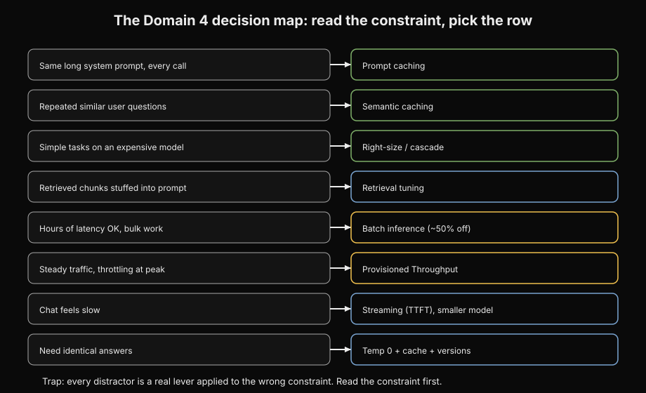
How to read this. Each row is one scenario constraint with an arrow to its lever; border colors group the levers by family (green cheapest, amber capacity, blue latency/quality). Takeaway: read the constraint first, then reach for exactly one row; the distractor is always a real lever on the wrong row.
Memorize this before you read other information. It answers half of this domain.
| Limit in the scenario | The lever |
|---|---|
| The token bill grows. The system uses the same long system prompt on every call. | Prompt caching (cheaper repeated input tokens) |
| The token bill grows. Users ask similar questions many times. | Semantic caching (skip the model call completely) |
| The token bill grows. Simple tasks use an expensive model. | Make the model the correct size. Or, use a router to cascade models. |
| The token bill grows. Retrieved chunks are put into the prompt. | Tune the retrieval. Use a lower top-k value. Rerank and truncate. This gives fewer, better chunks. |
| A narrow task repeats millions of times. The behavior must be consistent. | Fine-tune or distill on a small model. This is the last resort. It is the most expensive lever. |
| The work is not urgent. Hours of latency are acceptable. | Use batch inference. This is about 50% less than on-demand. |
| Traffic is steady and predictable. Throttling occurs at peak times. There is a latency SLA. | Use Provisioned Throughput for the baseline. Use on-demand overflow for spikes. |
| Traffic is spiky. The user wants cheap Provisioned Throughput for all traffic. | Use on-demand. Provisioned Throughput on spiky traffic wastes the commit. This is a trap. |
| Users say the chat is slow. | Use streaming (time to first token). Then use a smaller model. |
| Outputs change each time. You need consistent outputs. | Set temperature to 0. Use a deterministic cache. Use prompt versions. DO NOT use provisioned throughput. |
| You need to know why cost increased. You need to know why hallucinations happen. | Use CloudWatch token metrics. Use invocation logs. Use X-Ray traces. |
This is the main idea of this domain.
These are the pricing controls in order: token efficiency, retrieval tuning, prompt caching, semantic caching, batch, provisioned throughput, smaller models and routers, fine-tuning. AWS will ask this: a situation with one main limit (cost increase, latency SLA, throttling at peak, offline work). This is the trap: every wrong answer is a real control used for the wrong limit. Provisioned throughput is for a spiky workload.
Prompt caching is for personalized queries with no repeated start. A bigger model is for a cost problem. Read the limit first. Then choose only one row from the table.
01. On-demand inference pricing and token economics
As you learned in D1, the price of inference starts with input and output tokens. This domain is about spending fewer of them.
Every team learns this domain the same way. They see the first production invoice. The demo was cheap. Then real traffic came. The chat history grew. The retrieved context became very large.
The bill increased when no one watched. No one changed the model. The tokens kept moving. Users said the chat was slow. Cost and speed are the same problem. This book teaches both.
This is the default way you pay for Bedrock: per token. It splits into input tokens and output tokens. Each model has a rate.

The bill, in one paragraph
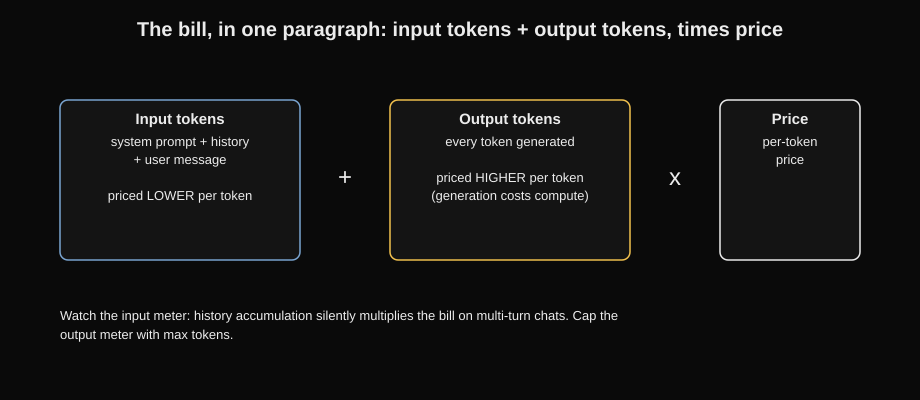
How to read this. Three blocks in the equation: inputs priced lower, outputs priced higher because generation costs compute, times price. Takeaway: the input meter is where multi-turn history silently multiplies the bill.
On-demand inference is Bedrock's pay-as-you-go price. You use InvokeModel or Converse with a model ID. AWS bills input tokens and output tokens. Input tokens are all data you send. Output tokens are all data the model makes. AWS bills each token type at the model's per-thousand-token price.
A token is a piece of text. The model processes this text. A token is about three quarters of an English word. Output tokens cost more than input tokens. Making text costs more. It takes a full forward pass of the model for each token.
It exists because GenAI traffic is not steady. An app in beta, a demo, an internal tool with 50 users: paying for hourly capacity is not logical. On-demand means zero cost when idle. You pay only for what you use. It removes idle waste. You never pay for GPU time you do not use.
The silent cost killer: the whole conversation history goes in again as input tokens. This happens on the next turn of a chat. A 20-turn chat re-pays the full history on each turn. Nothing stores by default.
Nothing remembers for free. Bedrock measures InputTokenCount and OutputTokenCount for each use. It sends them to CloudWatch. Your bill is exact.
cost per call = (input_tokens / 1000) × input_price + (output_tokens / 1000) × output_price
monthly cost = cost per call × calls per month
Here: input_tokens is all data you send. This includes the system prompt, conversation history, tools, and the user message. The output_tokens number is all data the model makes.
The input_price and output_price are the model's per-token rates. For example, these are $3.00/$15.00 per 1M in the example below. Nothing stores by default. History re-bills each turn.
A worked example
Prices are examples. They change by model and region. The math pattern is important. Use a main model at $3.00 per million input tokens. Use it at $15.00 per million output tokens. Use a small model at $0.25 and $1.25.
Flagship, per call:
input = 2,500 tokens * $3.00/1M = $0.0075
output = 300 tokens * $15.00/1M = $0.0045
total = $0.0120 per call
At 1 million calls/month: $12,000/month.
Lightweight model, same call:
input = 2,500 * $0.25/1M = $0.000625
output = 300 * $1.25/1M = $0.000375
total = $0.0010 per call
At 1 million calls/month: $1,000/month. 12x cheaper.
The system prompt has 2,000 tokens. The system re-bills it on each call. That single line of math shows why prompt caching exists. (See Topic 03).

Read the diagram: the prompt goes into an input meter. This meter counts each token in the system prompt, history, and user message. The response goes into an output meter. This meter has a higher price.
Making text uses more compute. Both counts multiply by their rates. They add to the total dollar cost. If you do not watch the input meter, history growth silently increases your bill on multi-turn chats. If you do not watch the output meter, unlimited max tokens let the model use your money on long answers.
Trap
"On-demand is the expensive choice. So I must always use provisioned throughput or batch to save money." This is wrong. On-demand is the cheapest choice when traffic is high for short times or low. The other choices charge for idle capacity or need commitments. Provisioned throughput has an hourly fee.
This fee applies whether you use it or not. If your app is idle at night, you pay for idle hours. The exam often offers provisioned throughput as a cost fix for sudden traffic. It gives a latency and capacity guarantee. It is not a discount for unpredicted use.
How the exam asks it: "a startup makes a chat feature. Use is not steady. The CFO wants the lowest bill during the test." The answer is on-demand inference. Wrong answers: provisioned throughput (steady price, but charges for idle hours), batch inference (hours of delay, not useful for chat), buying reserved capacity.
Why this comes next. On-demand pricing taught you how the meter works. Chapter 2 uses the first control. It is free. Make what you send smaller before you spend any money.
Next: Token efficiency. This is the free lever. Use it before you spend money.
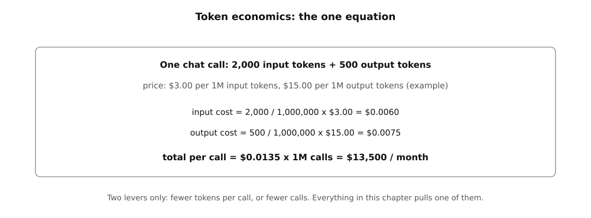
How to read this. The top line names the token counts, and the middle lines multiply each count by its price. The bottom line scales one call to one million calls. Only two levers exist: fewer tokens or fewer calls.
02. Token efficiency and prompt optimization
You do not pay for tokens that you do not send.
The free lever, pulled first
Token efficiency means you use the fewest tokens. You still complete the job. These are the techniques:
- Context pruning. Remove conversation history or document parts. They are not relevant. Do not send everything again.
- Prompt compression. Write long instructions as short instructions. Do not change the meaning.
- Response size limits. Set a maximum output with maxTokens. Give clear length instructions.
- Token estimation and tracking. Count tokens before you send them. Give an alert if calls use too many tokens.
Prompts become large naturally. Developers put a 3,000-word instruction document into the system prompt. They keep the full 50-turn history. They do not set an output limit.
The model answers well. The bill becomes twice as large. Every chat application sends everything again every time. This is expensive. Every pricing lever in this book works better with a small prompt.
These are the mechanics. Estimate tokens before you send them. Tokenizers count tokens for each model type. General rules: English uses about 4 characters per token. English uses about 0.75 words per token.
Record the estimate for each call. This shows which features use many tokens. Remove context. For conversation history, keep a moving window. This is the last N turns.
Or, make a short summary of older turns. For retrieval, get fewer, better parts. Do not send ten parts to be safe. You do not pay for each part you remove. Make instructions short. "Please provide a comprehensive, detailed, in-depth analysis covering all aspects" becomes "Analyze concisely." Keep two good few-shot examples.
Do not keep eight average examples. Check that the quality stays good after compression. Compression is a process to make things better. It is not a one-time change. Limit the output. Set maxTokens in the inference configuration.
Add clear length guidance. For example, "answer in under 100 words." Outputs without limits are like a budget without limits for output tokens. Track by feature. Tag calls by feature or prompt version. Token data shows which prompt is expensive. You guess if you optimize without measurement.
Support chatbot, 500k calls/month. Illustrative $3.00/$15.00 per 1M.
Before: 4,000-token system prompt + full 30-turn history (avg 3,000)
= 7,000 input tokens/call; 400 output tokens.
input: 500k * 7,000 = 3.5B tokens * $3.00/1M = $10,500
output: 500k * 400 = 0.2B tokens * $15.00/1M = $3,000
total = $13,500/mo
After pruning + compression:
system prompt compressed 4,000 -> 1,500 tokens,
history windowed to last 6 turns (avg 600 tokens),
output capped at 150 tokens.
= 2,100 input, 150 output per call.
input: 500k * 2,100 = 1.05B * $3.00/1M = $3,150
output: 500k * 150 = 75M * $15.00/1M = $1,125
total = $4,275/mo. Savings: $9,225/mo (68%), no model change,
no caching, no new service. Just a leaner prompt.
This is usually the first lever to use. It costs nothing to use. It makes every other lever work better.
Read the diagram. The large prompt on the left is an unoptimized prompt. It includes everything. It has a large document, duplicate paragraphs, and a long chat history.
The scissors box in the center shows optimization work. Deduplicate content. Window the history. Compress the instructions. Cap the output.
The small prompt on the right does the same task. It is one third the size. It keeps only relevant context. If you remove too much history, quality decreases. You trade cost for wrong answers. Always re-evaluate after compression.
If you do not measure, you optimize the wrong prompt. The expensive prompt is rarely the one developers guess. Set output caps. Give length guidance. The model may stop in the middle of a sentence. Pair maxTokens with an instruction to be concise.
Trap
Prompt compression does not make the model less capable. Compression removes extra words. It does not remove model knowledge. Remove "please" and duplicate examples. This does not reduce what the model knows. The exam may offer "switch to a smaller model." This is a trap.
The real problem is a large prompt on the correct model. Always fix the prompt first. This costs nothing. A second trap: teams use temperature or top-p for cost control. These control randomness and quality. They do not control token counts or cost.
The exam asks this: "token costs increase 30% each month. The CFO wants to reduce costs. Do not reduce user experience. Prompts include long histories and many instructions." The correct answer has many parts.
Remove context. Compress prompts. Limit output length. Estimate and track tokens for each feature. Wrong answers use only one part.
For example, only prompt caching, or only a smaller model. The exam rewards the person who uses the free options first. The phrase "without UX degradation" is important. You must check quality again. This means prompt work and evaluation. It does not mean only a cheaper model.
Why this comes next. Small prompts reduce tokens. But the repeated static prefix is a different cost. Chapter 3 gives a discount for the prompt part you pay for many times.
Next: prompt caching, which discounts the repeated prefix.
03. Prompt caching
Do not pay full price for the prompt part that does not change.
The discount for static prefixes
Prompt caching is a Bedrock pricing feature. It gives a discount for input tokens. This is for the repeated, static part of your prompt. You mark a cache point in your request. Bedrock stores the computed state for everything before this point.
This includes the system prompt, few-shot examples, and a long reference document. On the next call with the same prefix, Bedrock reuses that state. It does not process it again. It bills these cached input tokens at a lower rate. With the Converse API, add a cachePoint to the message or system content. With InvokeModel, use provider-specific cache_control markers.
Look at the Topic 01 example again. Bedrock billed the 2,000-token system prompt again on every call. Real applications do this often.
A support bot has a 5,000-token policy manual in the system prompt. An agent loop sends tool definitions again in each turn. A healthy application at scale can have 30 to 70 percent of its input tokens as the same static prefix. Caching changes this waste into a discount.
Understand the mechanics. Place one or more cache points in the request. Bedrock needs a minimum token count before the point. This is a minimum prefix length.
It depends on the model. Think hundreds to a couple thousand tokens. If it is below the minimum, nothing caches. On the first call, Bedrock processes the prefix completely.
It bills at the standard rate. It adds a small cache-write surcharge. It stores the computed state. This state uses the exact prefix content as a key. On later calls with the same prefix, Bedrock finds the cache hit. It does not compute again.
It bills cached input tokens at the discounted rate. Latency decreases. The model starts generating from partway through. The cache entry lives for a time to live (TTL). The default is about 5 minutes. Longer options are about 1 hour on supported models.
If the prefix content changes by one token before the cache point, the cache misses. If the TTL expires, the cache misses. The system computes the prefix again. Only supported models can do this. These are mainly the Claude family (3.5 and later) and Amazon Nova. You cannot cache on models that do not implement it.
This is example pricing. Cached input tokens cost about 10% of standard input tokens. This is a 90% discount. The cache-write cost is about 25% above standard on the first call. Numbers can change. Treat these as examples.
App: 8,000-token system prompt + few-shot examples (static),
500 tokens of new user input per call, 1M calls/month.
Without caching:
input = 8,500 tokens/call * $3.00/1M = $0.0255/call -> $25,500/mo input
With caching (first call writes cache, rest hit):
cache write (1 call): 8,000 * $3.75/1M = $0.03 (one time per TTL window)
cached reads: 8,000 * $0.30/1M = $0.0024/call -> $2,400/mo
new input: 500 * $3.00/1M = $0.0015/call -> $1,500/mo
total input ~ $3,900/mo instead of $25,500/mo.
The 500-token dynamic part still costs full price. Caching discounts only what you marked as static.
Read the diagram. The long system prompt is above a cache point marker. This is the cached layer. The system computes it one time. It does not compute it again within the TTL.
Only the small user message below the point processes fresh each call. This gives two benefits. It gives lower latency because the system computes the prefix already. It gives lower cost because the system discounts cached tokens. This breaks if the prefix changes between calls. For example, timestamps or user IDs go into the system prompt.
Then every call misses the cache. You pay full price. You also pay write surcharges. If the TTL ends between calls that are not frequent, the first call after the gap pays for the full recompute. Caching works only when the prefix is byte-identical. Calls must arrive within the TTL.
Trap
Prompt caching does not fix a throttling problem. Prompt caching is a cost control. It discounts repeated input tokens. It does not save capacity. If throttling occurs at peak time, use provisioned throughput (Topic 10).
Or use rate-limit handling (Topic 12). The exam uses prompt caching as a wrong answer for throttling problems. It also uses provisioned throughput as a wrong answer for \"same long system prompt every call\" problems. Match the control to the problem. For repeated prefix cost, use caching. For capacity and latency guarantee, use provisioned throughput.
MCEasy This is how the exam asks it. An agent sends a 10,000-token tool specification again on every turn. Token costs increase. The workload is otherwise good.
The answer: add cache points before the static tool definitions. Use a supported model. Wrong answers are: provisioned throughput (this does not solve the problem), batch inference (this stops real-time), reducing temperature (this does not relate to cost). The clue is \"same long prefix on every call\" or \"repeated static system prompt.\"
Why this comes next. Prompt caching discounts repeated tokens on calls you still make. Chapter 4 goes further. Skip the model call completely when the system asks the question before.
Next: semantic caching. Skip the call completely.
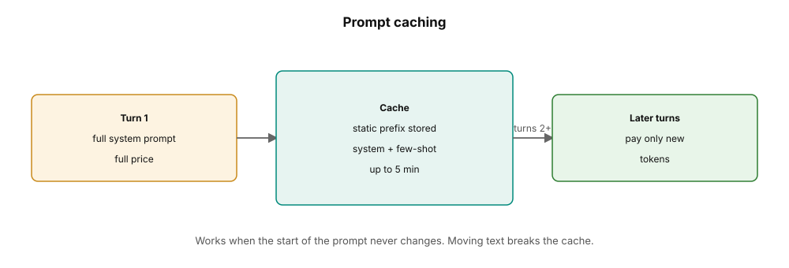
How to read this. Turn one pays full price. The cache stores the unchanging start of the prompt, and later turns reuse it. It works only when the prompt start never changes.
04. Semantic caching
Do not call the model if you know the answer already.
Answering from memory instead of the model
Semantic caching stores model responses. It reuses them for new questions. These questions must mean the same thing. The wording can be different.
A cache layer holds past question-and-answer pairs. It holds their embeddings. Embeddings are vector representations of meaning. Use ElastiCache for speed. Use DynamoDB for serverless simplicity.
The system embeds a new question. It compares the question by vector similarity to cached questions. If it is close enough, the stored answer returns immediately. This means zero model call, zero tokens, and almost zero latency. Deterministic request hashing is the simpler type. It is exact-match caching for requests that are byte-identical.
Real traffic repeats itself. \"What are your hours?\", \"how do I reset my password?\", \"where is my order?\" arrive many thousands of times each day. The words are slightly different. Answering each one with a new model call is a waste. The answer does not change. Semantic caching changes repetition into savings at the start. This happens before the system bills any token.
These are the mechanics. To store: after the model answers a question, the cache stores the question's embedding. This is its meaning as a numeric vector. It stores the question text and the answer.
It has a TTL (time to live). To look up: the system embeds a new question. It uses the same embedding model. It compares the new question against cached embeddings.
It uses cosine similarity. If it is above the similarity threshold (for example, 0.95, this is an example), it is a hit. If it is a hit: return the stored answer. There is no model invocation. There are no input or output tokens. Latency is in milliseconds.
If it is a miss: call the model normally. Then store the new pair for future hits. Placement: use ElastiCache (Redis) for lookups in less than one millisecond. Use it for high throughput. Use DynamoDB for a serverless cache. It has no cluster to manage.
The vector similarity search can run in the cache layer. Or it can run through a vector index. Invalidation: cached answers become old. This happens when the facts change. For example, prices or policies. TTLs and explicit invalidation on data updates keep the cache correct.
FAQ assistant: 2M questions/month. Analysis shows 60% are
semantically similar to previously answered questions.
Per call: 800 input + 150 output tokens, lite model at
illustrative $0.25/$1.25 per 1M = $0.0003875/call.
Without cache: 2M * $0.0003875 = $775/mo.
With semantic cache at 60% hit rate:
hits: 1.2M calls * $0 = $0 (+ tiny cache cost)
misses: 0.8M * $0.0003875 = $310/mo
Savings: ~$465/mo (60%), plus p99 latency (the latency 99% of requests beat) drops from
seconds to milliseconds on hits.
The hit rate is very important. Measure it on real traffic. Do this before you use the architecture.
Read the diagram. The incoming question goes into the cache box first. It does not go to the model first. On a hit, the system finds a similar past question. The stored answer returns immediately.
The system never calls the model. This is the money branch. On a miss, the question goes to the model. The model makes an answer. The answer goes back into the cache for storage.
Then the next similar question hits. The mechanism matches based on meaning. It is not exact text matching. This breaks if a similarity threshold is too loose. It returns answers that are wrong but similar. So, tune the threshold with evaluation.
Facts change without cache invalidation. This produces answers that are old but seem correct. If queries are very personal, each user's question is unique. Then the hit rate becomes very low. The cache is useless. The exam does not accept semantic caching for personal recommendations.
Trap
"Semantic caching and prompt caching are the same." This is not true. They reduce different costs. Prompt caching reduces the cost of repeated input tokens. This happens on calls you make. It is a Bedrock feature.
It uses a static prefix. Semantic caching removes the call completely. It does this for repeated meanings. This is your architecture. It uses ElastiCache or DynamoDB.
There is a second trap. Do not use semantic caching for highly personalized queries. Personalized queries mean each question is unique. So, the hit rate is almost zero. The cache adds latency and complexity for no reason. The exam names this exact rejection.
The exam asks this: "A FAQ bot gets millions of questions. Analysis shows many repeated questions with different words. Reduce cost and latency." The answer is a semantic cache.
Use ElastiCache or DynamoDB. Put it before the model. Use similarity matching and TTL invalidation. Distractors are prompt caching.
Prompt caching still makes the call. The questions change, so the prefix is not static. Provisioned throughput is for capacity, not repetition. Fine-tuning is not relevant. The key is "repeated similar questions" plus cost and latency goals. The opposite key is "personalized recommendations." This makes semantic caching not useful.
Why this comes next. Caching reduces repetition. Chapter 5 reduces the other big input cost. The system puts retrieved chunks into every prompt.
Next: Tune retrieval. Make the chunks in the prompt smaller.
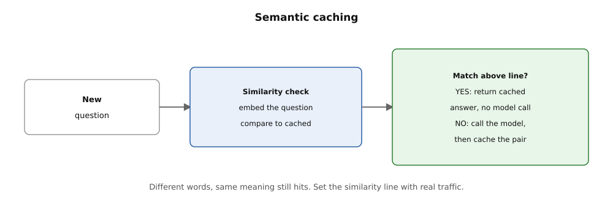
How to read this. The system embeds the new question and compares it to cached pairs. Above the similarity line, the cached answer returns with no model call. Below the line, the model runs, caches the pair, and you set the line with real traffic.
05. Retrieval tuning: fewer, better chunks
Retrieved context is usually the biggest part of a retrieval prompt. Tune it before you pay for it.
Every chunk is input tokens
A RAG application gets document chunks. It puts them into the prompt. The model can then answer from your data. (RAG, retrieval-augmented generation, is in Domain 1.
Chunking strategies and embeddings are also there.) Each chunk costs input tokens on every call. The usual idea is to get many chunks. For example, ten chunks of 500 tokens "to be safe" is 5,000 tokens. This is before the user asks anything.
Also, extra chunks are not just expensive. They are noisy. Chunks that are not relevant distract the model. Quality goes down. The cost goes up. This chapter answers that problem.
Retrieval tuning means using the fewest context tokens. These tokens must still contain the answer. There are four ways to do this. Start with the cheapest.
1. Get fewer chunks: lower top-k. Top-k is the number of chunks the retriever returns for each query. If you get ten chunks, and the answer is always in the top three, seven chunks are waste.
Change top-k from 10 to 3. Run your evaluation again. If answer quality stays the same, you cut the retrieval token cost by 70 percent. This technique prunes the prompt for RAG. It costs nothing.
2. Rerank, then truncate. A reranker is a small model.
It scores candidate chunks for relevance to the query. Do this: get chunks cheaply and broadly. For example, get 20 candidates by vector similarity. Rerank them.
Keep only the top 3 for the prompt. The broad first pass protects recall. (The answer is somewhere in the 20.) The reranker protects precision. (Only the best 3 cost tokens.) Reranking adds milliseconds. It adds a small cost per call. This is much less than putting 20 chunks into a main prompt.
3. Make each chunk denser. A 500-token chunk that has one useful paragraph wastes 400 tokens. Semantic chunking splits on topic changes.
Hierarchical chunking uses small children that link to larger parents. These methods put more signal in fewer tokens. The chunking methods are in Domain 1. The Domain 4 point is this: chunk design is a token-cost decision. It is not only a quality decision.
4. Filter before you search. Metadata filtering makes the candidate set smaller before vector search. This means you need a smaller top-k. This means fewer tokens in the prompt. It also makes retrieval latency shorter.
Support RAG bot, 1M calls/month, illustrative $3.00/1M input tokens.
Each call retrieves chunks of ~500 tokens.
Before: top-k = 10 -> 5,000 retrieval tokens/call
1M * 5,000 = 5B tokens * $3.00/1M = $15,000/mo in retrieval context.
After: broad retrieve 20, rerank, keep top 3 -> 1,500 tokens/call
1M * 1,500 = 1.5B tokens * $3.00/1M = $4,500/mo.
Reranker cost: small model, ~$400/mo at this volume.
Savings: ~$10,100/mo (67%), provided evaluation confirms
the top 3 reranked chunks answer as well as the top 10 raw.
Always check again after you change retrieval. The answer chunk does not reach the prompt if the top-k set is too low. The reranker can also be wrong. Then the model guesses.
You trade token cost for wrong answers. Retrieval tuning is a loop. Measure answer quality on a fixed test set. Make tokens fewer. Measure again.
Trap
Do not add more chunks to fix wrong answers. More chunks make cost higher. They often make quality lower because of noise.
The exam's RAG-cost scenario wants fewer, better chunks. Use a lower top-k. Rerank and cut. Use denser chunking.
There is a second problem. Do not use a bigger model when answers are wrong. The retrieval is bad. If the correct chunk does not reach the prompt, no model can give a correct answer. Fix retrieval first. It costs nothing.
How the exam asks it: "A RAG application gets 10 chunks per query. Token costs grow. Answers are usually correct but long. Quality must not drop." Answer: Make top-k smaller.
Add a reranking step. Keep only the top few chunks. Check with evaluation. Wrong answers: A bigger model costs more.
It does not fix retrieval. Fine-tuning the model on the documents is the wrong tool. It does not change knowledge. This is Domain 1's problem. Prompt caching helps only if retrieved chunks repeat exactly. They do not.
Why this comes next. Prompts are short. Context is cut. The next question is if you need the expensive model. Chapter 6 sends each request to the cheapest model that can do the work.
Next: Make models the right size. Use cascading. Use the cheapest model for each request.
06. Right-sizing models and cascading with routers
The cheapest correct answer is usually a smaller model.
Match the model to the difficulty
Right-sizing means you match the model to the task's difficulty. Do not use the flagship model for all tasks. Model cascading does this automatically. A small classifier or router checks each incoming request. It sends simple requests to a cheap, light model.
Simple requests are classification, extraction, and short answers. It sends only complex requests to the expensive flagship model. Complex requests are multi-step reasoning and long generation. Bedrock's prompt routers are the managed version. You set routing rules. Bedrock divides traffic by predicted complexity.
Most production work has two types of requests. 70 to 90 percent of requests are easy. These are FAQ lookup, tone rewrite, and entity extraction. A small number are hard. Running the flagship model on easy work is like hiring a senior architect to sort mail.
The cost difference between model levels is about 10x. So, each easy request sent to a cheaper model saves 10 times the cost. Without routing, teams pay too much for the flagship model. Or they do not serve hard queries well with the small model. Cascading makes both right for each request.
The mechanics. Classify: Each request goes through a router. This can be a small model, a rules engine, or Bedrock's managed prompt router.
Its job is one binary decision: simple or complex. Route simple: Easy requests go to the lightweight model. These are Haiku-class, Nova Lite-class, or Llama 8B-class models. They are 5 to 15 times cheaper per token.
They have lower latency. Escalate complex: Hard requests go to the flagship model. The small model can try first. It escalates if confidence is low. This is a two-stage cascade. It catches router mistakes.
Measure: Track quality for each route. Use evaluation scores, user feedback, and escalation rate. If the router misclassifies too often, change its rules. Routing is a loop to make things better. It is not a one-time setup. The important metric is quality per dollar, not raw quality.
A router sends 80% of traffic to a model 10 times cheaper. There is no measurable quality drop for those requests. This cuts the bill by about 70%. The router itself must be almost free. Use rules or a small model. A router that costs as much as the savings is a net loss.
1M requests/month. 80% simple, 20% complex.
Each request: 1,000 input + 200 output tokens.
Illustrative pricing: flagship $3.00/$15.00 per 1M, lite $0.25/$1.25 per 1M.
All flagship:
per call: 1,000*$3.00/1M + 200*$15.00/1M = $0.003 + $0.003 = $0.006
1M calls = $6,000/mo
Cascaded (router cost negligible):
simple (800k): $0.00025 + $0.00025 = $0.0005 -> $400
complex (200k): $0.006 -> $1,200
total = $1,600/mo. Savings: $4,400/mo (73%).
Read the diagram. All incoming questions enter one funnel. The classifier diamond makes the routing decision. This decision is simple or complex. Easy questions take the top branch. This branch goes to the lightweight model.
This model has a low-cost tag. It carries most of the traffic. Hard questions take the bottom branch. This branch goes to the flagship model. This model has fewer calls. It has a higher unit cost.
The difficulty justifies this cost. Responses merge back. Total spend goes down. This is what breaks. If the router misclassifies hard questions as simple, quality drops. This happens on the most important questions.
So, monitor per-route quality. Do not just monitor cost. If the router is slow or expensive, it erases the savings. If traffic is uniformly complex, cascading adds complexity. It gives zero savings. Profile your workload first.
Trap
"Bigger models are always better. So, routing easy work to a small model risks quality." The exam tests this wrong assumption. Measure quality per task.
A lightweight model scores the same on simple extraction. This model is not lower quality. It is the correct size. Misclassification is the real risk.
You control this risk with evaluation. Also, watch the router confusion trap from Topic 11. Prompt routers route by complexity for cost. Inference profiles route by region for availability. These are different tools. They are for different scenarios.
This is how the exam asks it: "Token costs grow. Analysis shows 80% of requests are simple FAQ lookups. The flagship model currently serves these. Quality must not drop." Answer: Add a prompt router or cascade. Send simple queries to a lightweight model.
Send complex queries to the flagship. Distractors: Fine-tuning the flagship is wrong. It is a huge effort. Prompt caching helps only with a repeated prefix. Provisioned throughput is for capacity, not cost. The tell is "simple queries on an expensive model."
Why this comes next. Routing picks the correct model per request. Chapter 7 puts the behavior into the weights instead. This is the most expensive lever. Pull it last.
Next: Fine-tuning puts behavior into the weights.
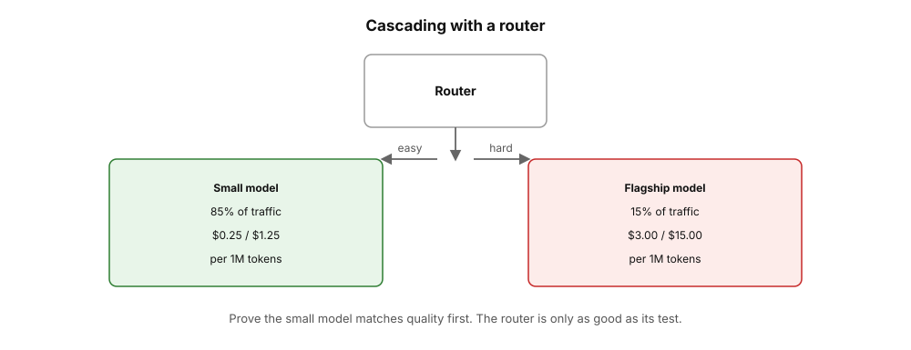
How to read this. The router reads each question. Easy questions go left to the cheap model, and hard questions go right to the flagship. Prove the small model matches quality first.
07. Fine-tuning a small model for your workload
The same narrow task runs millions of times. Stop renting the flagship's generality. Put the behavior into a small model.
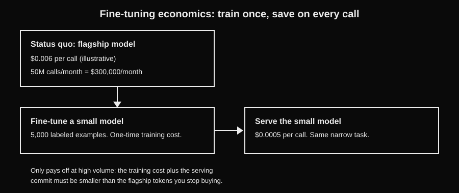
The most expensive lever, for the most repeated work
Fine-tuning trains a model on your labeled examples. A behavior becomes part of the weights. It is not instructions repeated in every prompt. Supervised fine-tuning uses prompt-and-response pairs. These are for a support tone, a classification task, or a response format.
Distillation trains a small, cheap student model. It imitates a large teacher model. It does this for your one narrow task. This gives near-teacher quality at student cost. The full mechanics, continued pre-training, imported models, and LoRA (low-rank) adapters are in Domain 1, Chapter 8. This chapter is only about when the economics justify it.
Cascading (Topic 06) still leaves the hard part of traffic on the flagship. Some workloads carry a giant system prompt on every call. This enforces a consistent tone or format. A 40-page style guide costs tokens on every one of 50 million monthly calls.
The model still changes. Fine-tuning exists for this exact shape. It is a narrow, repeated behavior. Consistency matters. The per-call cost of instructions never ends.
The economics. Training costs once. It needs hundreds to a few thousand high-quality labeled examples. It needs hours of compute. Serving usually needs Provisioned Throughput for the custom model.
This is an hourly commitment. The per-call price then drops to small-model rates. The arithmetic only works at scale. The one-time training plus the serving commitment must be smaller than the flagship tokens you stop buying. This must be true month after month.
Brand-voice classification, 50M calls/month.
Each call: 1,200 input tokens (800 of them style-guide prompt).
Flagship at illustrative $3.00/$15.00 per 1M:
per call: 1,200 * $3.00/1M = $0.0036 -> $180,000/mo.
Fine-tuned small model (style baked into weights, prompt shrinks
to 400 tokens) at illustrative $0.25/$1.25 per 1M, served on PT:
per call: 400 * $0.25/1M = $0.0001 -> $5,000/mo tokens
+ PT for the custom model: ~$14,400/mo (illustrative 1 unit)
+ one-time training: a few thousand dollars, amortized.
New total ~ $20,000/mo vs $180,000/mo.
The lever is last because the upfront cost is real and the
payback needs volume. Below ~1M calls/month, cascading plus
prompt work wins without any training.
There are two failure shapes. Fine-tune for behavior, not knowledge. Documents that update monthly become old in the weights. They cannot cite sources.
This is RAG's job. (This is Domain 1's master trap. The system repeats it here because the exam repeats it. Train on mediocre examples. The model learns your bad habits at scale.
So, example quality is better than example quantity. And the serving problem: A fine-tuned model is never given Provisioned Throughput. The model requires it. You cannot invoke the model at all. "The training job succeeded but calls fail" points at missing throughput. It does not point at bad data.
Trap
Do not fine-tune the model on your documents if the documents change. Do not fine-tune if the answers must show sources. Use Retrieval Augmented Generation (RAG) instead.
The exam cost scenario for fine-tuning is always the same. It is a narrow, repeated task. It has stable behavior and a huge volume. Prompts cannot guarantee this consistency.
Fine-tuning is not the first lever. Training is the most expensive lever. Training is the slowest lever. The exam rewards candidates who try prompt work first. The exam rewards candidates who try retrieval tuning first. The exam rewards candidates who try cascading first.
The exam asks this: "A company enforces a consistent brand voice. It sends 50M responses each month. It uses a giant system prompt. Token costs are a problem. The voice rules are stable." Answer: Fine-tune a small model.
Or distill the flagship model's behavior into a small model. The style lives in the weights. The prompt shrinks. Distractors: RAG is wrong. Knowledge is not the problem.
Prompt caching is wrong. It discounts the giant prompt. But the drift remains. A larger model is wrong. It is more expensive. The drift is the same.
Why this comes next. The cost levers are complete. Chapter 8 talks about the second axis of the trade-off. This is latency. It is the difference between actual speed and perceived speed.
Next: latency and streaming. Perceived speed versus actual speed.
08. Latency vs throughput: streaming and perceived speed
Users judge speed by the first token. They do not judge speed by the last token.
Perceived latency is the metric that matters
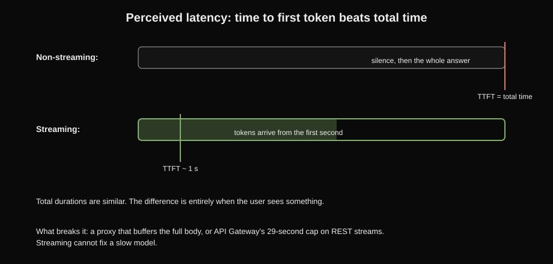
How to read this. Two timelines. Top: silence, then the whole answer; the red line marks time to first token at the end. Bottom: the green bar starts near the left, tokens arriving early. Takeaway: total durations are similar; perceived speed is entirely about when the user sees something.
Streaming sends the model's response token by token. It sends tokens as the model makes them. It does not wait for the full response.
It does not send the full response at one time. Use ConverseStream or InvokeModelWithResponseStream. Your application receives a stream of events. It shows each token when the token arrives.
Time to first token (TTFT) is the delay. It is the delay before the first token appears. Total latency is the delay until the last token. Streaming does not change total latency. It changes perceived latency. Users feel perceived latency.
A 500-token answer can take 15 seconds to make completely. A blank screen for 15 seconds feels broken. The first words in 1 second feel instant. The rest of the words flow after the first words. The total time is the same.
Chat products succeed or fail based on this perception. Streaming also lets you start work early. Start rendering. Start text-to-speech. Detect a refusal before the full response is complete.
The mechanics: Your application calls the streaming API variant. The connection stays open. This is like server-sent events. The model makes tokens. Each token is sent as an event.
This happens when the model makes the token. Your client application adds the token to the visible text immediately. TTFT depends on input size and model size. A huge prompt delays the first token. A giant model delays the first token. Total time depends on output length and generation speed.
Streaming passes through your stack. This happens on the way to the browser. That chain must stream end to end. API Gateway supports streaming responses. But it has payload and timeout limits.
For long streams, teams use WebSocket APIs. Or they stream directly from the client to Bedrock. Streaming works with other latency levers. Smaller models lower TTFT. Prompt caching skips prefix recomputation. Provisioned throughput removes queueing delay.
This is an example. A support chat makes 400-token answers. It makes them at 30 tokens per second. It uses a flagship model.
Non-streaming:
user waits the full generation: 400 / 30 = 13.3 seconds of blank screen.
Streaming:
TTFT ~1.2s (prompt processing + first token)
user sees words at 1.2s, text completes at ~14.5s total.
Same total time, but the user perceives a 1.2s response.
Switching to a lightweight model at 60 tokens/sec:
TTFT ~0.6s, total ~7.3s. Faster AND cheaper per token.
perceived latency = TTFT total latency = TTFT + output_tokens / tokens_per_sec
TTFT is the time to the first token. This includes prompt processing and the first token. Total latency adds the full generation. The numbers above show this. 400 tokens at 30 tokens per second means 13.3 seconds of blank screen.
This is without streaming. Streaming gives a 1.2 second perceived response. A smaller model at 60 tokens per second gives 0.6 seconds TTFT. It gives 7.3 seconds total. This is faster and cheaper per token.
The two axes are separate. Streaming fixes perceived latency. Smaller models fix actual latency. A "feels slow" complaint is usually fixed by streaming first.
Inference parameters: temperature, top-p, top-k, max tokens
There are four controls on every model call. None of them is a cost control. Temperature controls randomness.
At 0, the model picks the most probable token each time. This is the most deterministic setting. Higher values sample more creatively. Top-p limits sampling.
It uses the smallest set of tokens. The probabilities of these tokens sum to p. This is also called nucleus sampling. Top-k limits sampling to the k most probable tokens. Max tokens sets the maximum output length. The model stops at this length.
Consistency motivates these controls, not cost. A contract needs almost identical answers to identical queries. Temperature 0, deterministic caching, and prompt versioning provide this. Provisioned throughput stabilizes latency, not randomness.
Max tokens has a cost effect. It limits output spend. This is why it is in Topic 02's output caps. But temperature and top-p do not change the price per token. They change the answer's form.
There are two types of failure. Do not tune temperature to fix a cost problem. Randomness controls do not change token counts. Do not raise max tokens "to be safe". Unbounded outputs are like an uncapped budget for output tokens.
Look at the diagram. The non-streaming timeline is one long bar of silence. Then the full answer appears at once. The time-to-first-token line is far to the right. The streaming timeline shows tokens arriving in parts. This starts almost at the beginning.
The TTFT line is near the left. Text builds while generation continues. Total durations are similar. The difference is when the user sees something. This breaks if your delivery path buffers the stream. A proxy waits for the full body.
API Gateway limits long connections. Users get non-streaming behavior. This happens even with your streaming API call. If the model is very large and slow, TTFT stays bad. Streaming cannot fix a model that is too slow. Only a smaller model or caching can fix this.
Trap
"Streaming makes the model faster." This does not change generation speed. It changes when the user sees output. The exam has a second trap. It asks about using streaming to fix a hard latency SLA. The scenario needs a guaranteed complete response in less than 3 seconds.
Streaming helps perception. But provisioned throughput and model choice give the guarantee. Also, watch for "streaming reduces cost". It does not. Token counts are the same.
How the exam asks it: "Users say the chatbot feels slow. Responses take more than 10 seconds to appear. Answers are correct." Answer: Enable streaming (ConverseStream). This makes tokens render incrementally.
Distractors: Provisioned throughput fixes capacity, not perception. It costs more. A larger model is slower and more expensive. Batch inference is the wrong direction. The key words are "feels slow" or "time to first token" with correct but slow answers.
Why this comes next. Streaming serves users now. Chapter 9 serves work that can wait. Batch inference costs about half the price.
Next: batch inference. It costs half price for work that can wait.
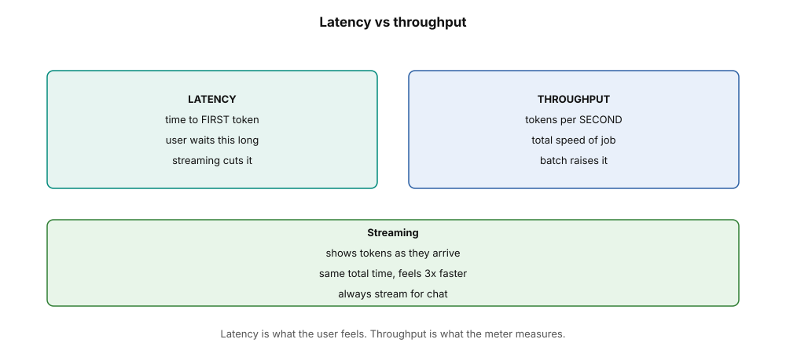
How to read this. The left box is what the user waits for, and the right box is what the meter measures. The bottom box shows streaming: tokens appear as they arrive. Always stream for chat.
09. Batch inference
Get half-price inference for work that can wait.
Overnight work at roughly half price
Batch inference is Bedrock's asynchronous, discounted inference mode. Do not call the model and wait. You upload a file of many requests to S3. The file uses JSON Lines. Each line is one request.
Start a batch job. Bedrock processes all requests in the background. Results go to another S3 location hours later. The price is about 50% lower than on-demand for the same model. AWS schedules your work into idle capacity windows.
Not every model call needs an answer in seconds. Nightly document classification is an offline workload. Weekly report summarization is an offline workload. Backfilling embeddings for a knowledge base is an offline workload.
Paying on-demand rates and holding open connections is wasteful. Nobody waits for this work. Batch trades latency for price. Without batch, teams overpay for overnight jobs. Or teams build their own queue and retry system for real-time calls.
The mechanics are as follows: Write requests as a .jsonl file. Each line is one complete model invocation. It contains the model ID and the prompt body. Upload the file to S3. Call CreateModelInvocationJob with the input S3 URI and an output S3 URI.
Bedrock validates the file. Bedrock queues the job. Bedrock drains the queue in the background with spare capacity. Completion takes hours, not seconds. There is no latency SLA.
The system writes results as another JSONL file. The file goes to your output S3 prefix. Each line is one result. It includes per-request errors for bad lines. An IAM role gives Bedrock read access to the input bucket. It gives write access to the output bucket.
Nightly job: summarize 200,000 product reviews.
Each call: 1,500 input tokens, 200 output tokens.
Illustrative flagship pricing: $3.00/$15.00 per 1M in/out tokens.
On-demand:
input = 200,000 * 1,500 = 300M tokens * $3.00/1M = $900
output = 200,000 * 200 = 40M tokens * $15.00/1M = $600
total = $1,500 per night
Batch (50% discount):
total = $750 per night -> $273,750/year saved if run nightly.
batch cost ≈ 0.5 × on-demand cost
yearly savings = nightly savings × 365
The about 50% discount applies to the same model on the same tokens. AWS schedules batch work into idle capacity. The numbers show this: $1,500 per night on-demand becomes $750 per night in batch. So, $750 × 365 = $273,750 saved per year. You give up fast answers. Answers arrive hours later instead of seconds.
You gave up only one thing: Answers arrive hours later instead of seconds.
Read the diagram: The JSONL file of requests is in S3. No application holds an open connection. The batch job box shows a clock. This means hours of latency.
It shows a 50% discount tag. Bedrock schedules this work into spare capacity. Results collect in S3 as JSONL. Your application can poll for them. What breaks: Bad JSONL lines fail one by one.
You find this hours later from the output file. So, validate first. If the IAM role does not have S3 write permission on the output prefix, the whole job fails. If the workload is interactive, batch is the wrong tool. This is true even if it is cheap. The exam tests if you notice the latency requirement.
Trap
"Batch inference is just a slower on-demand. So I can use it for my chat app to save money." No. Batch has hours-scale latency. It has no SLA.
Using it for interactive things breaks the product. The exam asks this: "a company wants to cut inference costs for its real-time chatbot." It offers batch as a tempting 50%-off distractor. The latency requirement in the scenario disqualifies batch immediately. Batch is correct only when the scenario says words like "nightly", "offline", "no strict latency requirement", or "results needed by morning".
How the exam asks it: "a media company must make summaries for 500,000 archived videos. The company needs results within 24 hours. Minimize cost." The answer: batch inference with S3 input and output. Distractors: provisioned throughput (paying for idle hours on a one-shot job), on-demand with a big Lambda fleet (full price plus operational overhead), fine-tuning (not relevant). The key is "offline" plus "cost is the priority."
Why this comes next. Batch covers offline work. On-demand covers peak work. Chapter 10 covers steady work. This is reserved capacity for steady work.
Next: This is provisioned throughput. It is reserved capacity for the steady baseline.
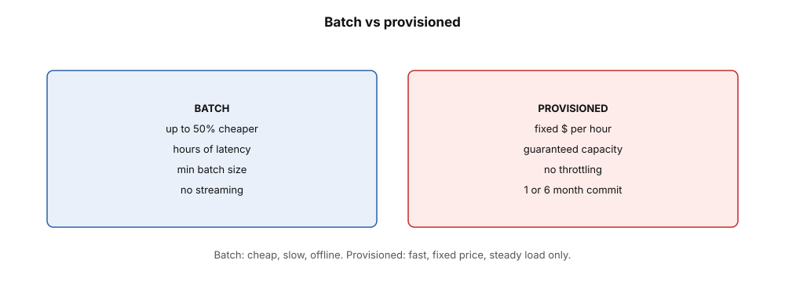
How to read this. The left box is batch: up to half price, hours of latency, offline only. The right box is the provisioned tier: fixed dollars per hour with guaranteed capacity. Steady big load earns provisioned, and spiky offline work earns batch.
10. Provisioned Throughput
As you learned in D2, you can reserve model capacity. This section covers when that reservation pays off.
Reserve capacity when you need steady traffic. Reserve capacity when you need latency guarantees. These are more important than the price per token.
Buying certainty by the hour
Provisioned Throughput (PT) is reserved inference capacity on Bedrock. You buy model units. Each unit has a fixed amount of processing capacity for one model. You buy units for a commitment term.
The common terms are 1 month or 6 months. You pay an hourly rate for each unit for the full term. You pay if you use it or not. Your requests go to your provisioned model. This gives you dedicated capacity.
You get consistent latency. You get no throttling from shared on-demand quotas. You get a guaranteed throughput floor. Use CreateProvisionedModelThroughput to make it. You get a provisioned model ARN (Amazon Resource Name). Invocations must use that ARN to use the reserved capacity.
On-demand shares capacity with all users. At peak times, your requests compete with other customers. The system can throttle your requests. Latency changes. A production application needs a latency SLA.
This means responses must be less than 3 seconds. Or, the application has a steady high volume. In these cases, latency changes are not acceptable. PT gives you certainty. Your baseline traffic always has a path.
These mechanics are important. Sizing: Estimate your steady load in tokens per minute. Buy enough model units to cover this load. The console and documentation give guidance for each model. Commit: Commit for 1 or 6 months.
Longer commitments cost less per hour. The hourly meter runs 24 hours a day, 7 days a week for the full term. It runs if you use it or not. Routing: This step is often wrong. Buying PT does nothing by itself.
Your code must invoke the provisioned model identifier (ARN). Do not use the base model ID. If your code calls the base model ID after you buy PT, it still goes to the on-demand pool. It still gets throttled. You pay for idle reserved capacity. This is a common exam error.
Autoscaling: PT supports autoscaling policies. These policies add model units when utilization goes above a threshold. They remove units when traffic goes down.
You set minimum and maximum limits. Autoscaling handles growth during the term. But, scaling up takes time to start. So, it does not replace burst planning.
This is the hybrid pattern. It is the exam's "most correct" production answer. PT covers the predictable baseline. This is 2 million requests per day that always arrive.
On-demand overflow handles the spikes. This is the 10 times Friday rush. Never provision for the peak. Provision for the floor.
These are example numbers. One model unit costs $20 per hour for a 6-month term. Your application has a steady baseline. This baseline would cost $15 per hour on-demand. It runs 24 hours a day, 7 days a week. Friday spikes triple the load.
Option A: all on-demand.
baseline $15/hr * 720 hrs/mo = $10,800/mo
spikes add ~$4,000/mo = $14,800/mo total
risk: throttling at peak, latency variance.
Option B: PT for baseline + on-demand overflow.
1 model unit covers the baseline: $20/hr * 720 = $14,400/mo
spikes on-demand: ~$4,000/mo
total = $18,400/mo. MORE expensive than all on-demand!
Option C: PT only when the baseline is big enough.
If baseline were $30/hr on-demand, PT at $20/hr wins:
PT: $14,400 + spikes $4,000 = $18,400
on-demand: $30*720 + $8,000 = $29,600. PT saves $11,200/mo.
PT cost per month = hourly rate × model units × ~720 hours
PT wins if on-demand baseline per month > PT cost per month
hourly_rate is the cost per model unit. This cost is for the full term. You pay this cost if you use the unit or not. ~720 hours is one month of 24/7 billing. We use the numbers above. PT at $20 per hour costs $14,400 per month for the baseline.
This loses against a $15 per hour on-demand baseline. ($18,400 versus $14,800). This wins against a $30 per hour baseline. ($18,400 versus $29,600). This saves $11,200 per month. Always do the math before you make a recommendation.
This is the lesson: provisioned throughput is not a discount for all users. It wins if your steady baseline is large enough. The hourly rate must be better than the per-token rate. On-demand is cheaper for small baselines or spiky baselines. Always do the math before you make a recommendation.
Read the diagram. The timeline shows flat, predictable hourly traffic. This is the only shape that makes PT useful. If your timeline is spiky, stop here. Use on-demand. The solid block is the capacity you bought.
This includes model units, an hourly fee, and a committed term. It is always on. You always pay for it, even at 3 a.m. The decision diamond sends steady baseline traffic to the reserved block. It sends overflow spikes to the on-demand lane. This hybrid split is the production pattern.
The exam gives points for this pattern. This is what breaks: If code uses the base model ID, not the provisioned ARN, reserved capacity does nothing. Requests throttle on the on-demand pool. If you do not configure autoscaling, a growth spike goes past the reserved units. It throttles anyway. If the baseline becomes smaller, you keep paying the hourly fee for the full term.
Trap
There are two traps in one topic. Trap 1: "provisioned throughput makes my token bill lower on spiky traffic." This is not true. You pay the hourly fee when there is no work. This makes spiky workloads more expensive. Trap 2: "we bought provisioned throughput but we still have throttling." Capacity is not the problem.
Routing is the problem. The code must target the provisioned model ARN. The exam asks this as a debugging question. "After buying PT, throttling continued. What is wrong?" The answer is: the application still uses the base model ID.
The exam asks this in two ways. Design time. The baseline is 2M requests per day. Friday brings 10x spikes. Latency must stay under 3 seconds.
Make cost as low as possible. The answer: PT for baseline plus on-demand overflow. Distractors: all-PT (too much idle cost), all-on-demand (risk of throttling), EC2 fleet (too much work). Debugging: "PT bought, throttling continues." Answer: Route calls to the provisioned model ARN. Distractor: "buy more model units."
Why this comes next. Provisioned throughput reserves capacity in one region. Chapter 11 routes across regions for availability and failover.
Next: inference profiles, routing across regions.
11. Inference profiles and cross-region routing
Route around regional limits. Get more capacity. Get automatic failover. Use one identifier.
FACT-CHECK 2026-09-28: We corrected prefix list and profile ID format. We checked them against live sources. Cross-region inference profile prefixes are us., eu., apac., and global. (plus us-gov. for GovCloud).
There are no au. or jp. prefixes. APAC regions use apac. The inference profile ID format is correct. For example, us.anthropic.claude-haiku-4-5-20251001-v1:0.
One identifier, many regions
An inference profile is a Bedrock routing identifier. It sends your request to a model in one of several regions. It does not limit you to one region. Profiles have geographic prefixes: us., eu., apac., and global.
(plus us-gov. for GovCloud regions). You call a profile ID. For example, us.anthropic.claude-haiku-4-5-20251001-v1:0 (this is an example name). Bedrock routes the request across regions. The model must be available in these regions.
Bedrock picks one region with capacity. If one region throttles, the profile can fail over to another region. You call the profile ID. Do not call the bare model ID. Converse accepts the profile as a model identifier or ARN. InvokeModel takes the profile ID.
Two problems cause this. First, models are not in every region. Quotas are different for each region. An application in one region can reach that region's quota limit. Another region can be idle. Second, regional outages happen.
Inference profiles pool capacity across regions. They provide automatic failover. Your code does not manage region lists. Without them, every team builds retry logic across regions. This is operational overhead. The exam wants you to avoid this overhead.
You choose a profile scope. The scope is a data-residency decision. "us." keeps data in US regions. "eu." keeps data in Europe. "global." can send data anywhere. A compliance rule says, "data must stay in the EU." This makes "global." wrong.
It makes "eu." right. Your code sends the profile ID as the model identifier. Bedrock's routing layer chooses a destination region with available capacity. The source region of the profile manages quotas. Your throttling limits follow the profile. They do not follow each destination region separately.
Two profile types exist. System-defined profiles are prebuilt by AWS. They route across regions. You create application profiles yourself. An application profile wraps one region or one system-defined profile. It adds tags and CloudWatch usage metrics. Finance uses tags for cost allocation per team. Finance uses metrics for usage reports. The exam twist is "track cost per team." The answer is an application profile with tags. It is not a new system-defined profile.
Traffic stays on the AWS backbone. It encrypts during transit. Cross-region here does not mean the public internet. Failover is automatic for capacity errors. A throttled request in one region retries in another profile region. This is transparent to your code.
These are example quota numbers. Your application needs 500 requests per minute. This is for a model. The model's per-region on-demand quota is 200 RPM. This is in each of three US regions.
Single region: 200 RPM quota -> throttled at 40% of needed load.
us. profile: 3 regions pooled -> effective capacity up to ~600 RPM,
and failover if one region degrades.
Cost: identical per-token rates. The profile is a routing feature,
not a pricing feature. No extra charge for the routing itself.
The benefit is capacity and resilience. It is not price. Do not say that inference profiles reduce cost.
Read the diagram. One request leaves the application. It has a profile ID like us.... It does not name a region. It goes to a primary region with available capacity. If throttling or an outage occurs, the dashed failover arrow shows Bedrock retrying.
It retries in another profile region automatically. One response returns. Retry logic is in the platform. It is not in your code. What breaks: The wrong profile prefix for the residency constraint breaks compliance. For example, use "global." for an EU-only workload.
Profiles do not give model access. They only route. If the model is not active in the profile's regions, calls fail. You get access errors. If your code sends the bare model ID, you do not get this routing. You stay in one region.
Trap
The exam has three similar concepts. It tests them many times. Inference profiles route for availability and resilience.
They use geographic prefixes. Prompt routers / model routers route for cost and quality. They send easy prompts to cheap models. Provisioned throughput reserves capacity.
This is an hourly commitment. A scenario about regional failover needs an inference profile. A scenario about reducing cost on simple queries needs a router or cascade. A scenario about latency SLAs on steady traffic needs provisioned throughput. Each mechanism answers a different question. If you mix them up, the distractor wins.
How the exam asks it: "A model is in only two regions. The application needs resilience against regional outages and throttling. It needs minimal code changes." Answer: Call the inference profile ID. Distractors: Deploy EC2 with an ALB in a second region.
This does not solve Bedrock-side throttling. Custom retry logic across regions is operational overhead. Provisioned throughput reserves capacity in one region. It has no failover. The key words are "regional" plus "failover" plus "minimal operational overhead."
Why this comes next. You reserve capacity. It routes traffic. Chapter 12 shows what happens when traffic still reaches the speed limit. This includes throttling and retries.
Next: rate limits, throttling, and retries.
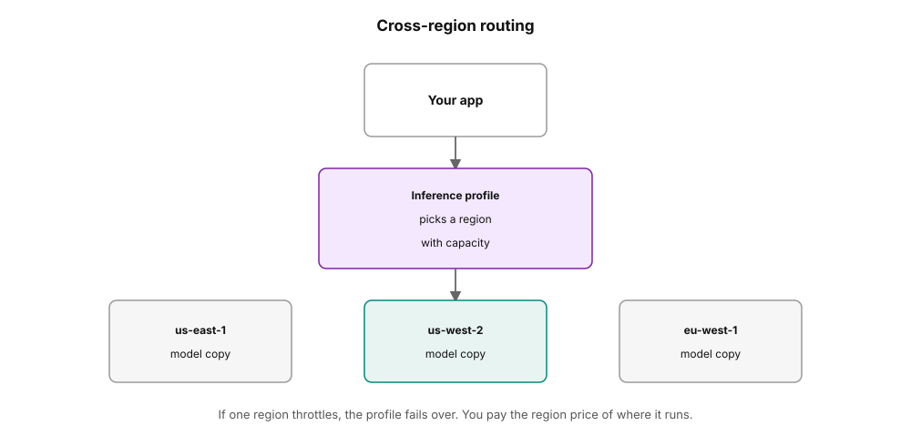
How to read this. Your app calls the profile. The profile picks a region that has room. If one region throttles, traffic fails over, and you pay the price of the region that serves you.
12. Rate limits, quotas, and throttling with retries
Every API has a speed limit. Production code respects it. It does not crash into it.
Throttling is a signal, not a bug
Rate limits and quotas are the maximum request rates. AWS allows these rates per account, per region, per model. If you exceed them, Bedrock returns a throttling error. This error is a ThrottlingException. Throttling means AWS rejects extra requests. This protects shared capacity.
The client must retry with exponential backoff and jitter. Wait, then retry. Wait longer each time. Add a small random offset. This stops many clients from retrying at the same time. This stops a second wave of requests.
Shared infrastructure needs protection from bursts. Without throttling, one customer's runaway loop can stop other customers' on-demand traffic. Without client-side retries, every temporary throttle becomes a user error.
The retry pattern changes a momentary "slow down" signal. It becomes invisible resilience. Most throttled requests succeed on the second or third attempt. There is no user impact.
Your application sends requests faster than the quota. Bedrock returns ThrottlingException for the extra requests. AWS SDKs retry throttling errors automatically.
They use exponential backoff by default. Wait about 1 second, then about 2 seconds, then about 4 seconds. This continues up to a maximum attempt limit. Jitter randomizes each wait.
This stops thousands of clients from hitting the API at the same time. If you write custom retry logic, retry only retryable errors. These errors come from throttling and from temporary 5xx responses. Do not retry validation errors. A bad request body always fails. Retrying it wastes quota.
At the architecture level, API Gateway adds its own throttling. This includes per-method rate limits, usage plans, and API keys. This protects your backend from client bursts. It protects them before they reach Bedrock. If retries alone are not enough, use structural answers. You provision throughput, inference profiles, or a quota increase from AWS support.
This is an example. The quota is 100 requests per minute for a model. Your application's Friday spike sends 300 requests in one minute.
Without retries:
~200 requests get ThrottlingException -> user-facing errors.
Failure rate: 67%.
With exponential backoff + jitter (SDK default, ~5 attempts):
most throttled requests land in the next minute's quota window.
Failure rate drops to low single digits, latency rises slightly.
With provisioned throughput sized for 150 RPM + on-demand overflow:
baseline never throttles; overflow retries handle the rest.
This is the layered answer the exam rewards.
failure rate = throttled requests / total requests
The quota controls extra requests. Retries spread them into later quota windows. From the numbers above: Bedrock throttled 200 of 300 requests. This is a 67% failure rate without retries.
Exponential backoff with jitter is the SDK default. It uses about 5 attempts. This drops the failure rate to low single digits. Retries handle temporary spikes. Sustained overload needs structural capacity.
Retries are the first layer. They are not the complete answer. Retries handle temporary spikes. Structural capacity handles sustained overload.
Read the diagram. Burst arrows hit the quota gate at once. The gate works correctly. Requests under the quota pass. It blocks extra requests. Blocked requests enter the backoff loop.
Waits double: 1 second, 2 seconds, 4 seconds. It adds jitter. Then, requests feed back into the gate. They spread over time and mostly pass. What breaks: Retrying immediately with no backoff re-hits the gate. This can make the throttle worse.
This causes retry storms. Retrying non-retryable errors, like validation failures, uses quota. These requests can never succeed. If the overload is sustained, not bursty, no retry pattern helps you. You need more capacity. This means Provisioned Throughput, profiles, or a quota increase.
Trap
"Throttling means something is broken. I must request a quota increase immediately." Throttling during a brief spike is normal. Retries handle it. Quota increases are for sustained, legitimate growth. The exam sets a trap. It offers "request a quota increase" as the fix.
This is for a temporary burst scenario. Or, it offers "buy provisioned throughput." This is when throttling is a 30-second spike. Retries would absorb this spike. Match the fix to the duration. Seconds of overload need retries. Hours of overload need capacity.
How the exam asks it: "During traffic spikes, the application throws ThrottlingException. Most spikes last under one minute. Minimize changes." Answer: Use SDK retries with exponential backoff and jitter. You can also add API Gateway throttling to smooth client bursts.
Distractors: Provisioned throughput is too much for sub-minute spikes. A quota increase is for sustained load. Catching the exception and dropping the request causes a user-facing failure. The key words are "brief spikes" and "minimal changes."
Why this comes next. You cannot optimize what you cannot see. Chapter 13 builds the dashboard. It shows the four metrics that make cost and throttling visible.
Next: CloudWatch metrics, the dashboard.
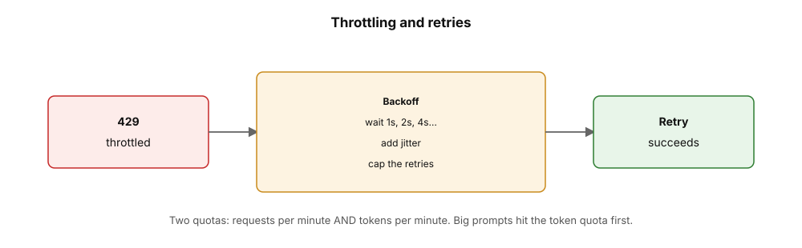
How to read this. The 429 box starts the wait. The backoff box doubles the delay: 1s, 2s, 4s, with jitter, then the retry runs. Two quotas exist: requests per minute and tokens per minute.
13. CloudWatch metrics for Bedrock
You cannot make better what you cannot see. These four metrics are the dashboard.
Four metrics, then alarms
Amazon CloudWatch collects operational metrics from Bedrock automatically. You must know these four metrics by name: Invocations (number of model calls, your volume baseline), InputTokenCount and OutputTokenCount (tokens in and out, your cost baseline; multiply by rates to get spend), InvocationThrottles (count of throttled requests, your capacity signal), and latency metrics (time per invocation, your performance signal). CloudWatch gives you alarms. Alarms tell you or act when a threshold crosses.
CloudWatch gives you anomaly detection. Anomaly detection uses machine-learning baselines. It flags unusual spikes without your threshold settings. CloudWatch gives you dashboards. Dashboards combine these items into one view.
GenAI bills are not clear by default. Tokens flow. Money flows. No one sees the link until the invoice. Metrics make the link clear in near real time.
A sudden 3x jump in OutputTokenCount with flat Invocations means responses became longer. This can be a prompt change. This can be the model talking too much. A spike in InvocationThrottles means you reach quota limits. Without metrics, you guess to find problems. With metrics, you read to find problems.
This is how it works: every Bedrock invocation sends metric data points to CloudWatch automatically. You do not need to set up the basics. You build a dashboard with the four key metrics. You slice the metrics by model ID and time.
This lets you see which model causes cost. This lets you see when spikes happen. You set alarms. Alarms alert you when InvocationThrottles goes above a threshold.
Alarms alert you when projected token spend goes above budget. AWS Budgets and Cost Anomaly Detection cover the money side. They give alerts on unusual spend patterns. CloudWatch anomaly detection learns the normal weekly pattern of your token metrics. It flags differences. These differences can be a runaway loop.
These differences can be a prompt regression. It does this without manual thresholds. For investigation, you go from metric to log. The spike in the dashboard leads you to CloudWatch Logs Insights queries. These queries are over invocation logs (Topic 14). They help you find the prompts that cause the problem.
Your dashboard shows this week versus last week for one model:
Invocations: 1.0M -> 1.05M (+5%)
InputTokenCount: 2.0B -> 2.1B (+5%)
OutputTokenCount: 0.3B -> 0.9B (+200%)
InvocationThrottles: 120 -> 95 (flat)
Reading: volume is flat, but output tokens tripled.
Diagnosis: something changed the responses, not the traffic.
Likely causes: a prompt edit removed the length limit, or maxTokens
was raised, or a new feature asks for long-form output.
Fix: check prompt versions (Prompt Management history), re-add
response size limits. NOT a capacity problem: throttles are flat.
This is the exam skill: read the metric pattern. Name the cause. Pick the fix. Flat throttles plus spiking tokens is never a provisioned-throughput question.
Read the diagram: rising invocation bars show call volume. Flat bars with rising cost elsewhere means each call became more expensive. It does not mean you have more calls. The two token lines separate when responses become longer.
This is a prompt or maxTokens issue. Red spikes on throttles mean quota limits. This is the capacity question. A latency spike with flat throttles points at model or prompt issues. It does not point at capacity.
What breaks: with no dashboard, you find cost spikes at invoice time. This is weeks late. Alarming on invocations instead of token counts means a prompt regression. This regression triples output tokens. It never pages anyone. Metrics not sliced by model ID cannot tell you which model uses the budget.
Trap
Two traps that cause confusion. Trap 1: use CloudTrail for performance or cost monitoring. CloudTrail records who called which API (audit plane). It does not carry token counts or latency as metrics.
Metrics are CloudWatch's job. Trap 2: use SageMaker Model Monitor for GenAI text quality drift. Model Monitor is for tabular ML. The GenAI answer is Bedrock evaluations and golden datasets (Domain 5). The exam offers both as distractors that sound correct.
The exam asks it this way. The team needs near-real-time detection of abnormal token spend and throttling spikes, with minimal custom work. The answer is CloudWatch metrics with anomaly detection and alarms, plus Cost Anomaly Detection. Watch InputTokenCount, OutputTokenCount, and InvocationThrottles. Distractors: a Glue plus Athena pipeline over logs (much custom work for a near-real-time need), CloudTrail (wrong plane), SageMaker Model Monitor (wrong workload type). The key words are "near real time" plus "minimal custom work": this is always the managed metrics service.
Why this comes next. Metrics show the pattern. Chapter 14 shows the specifics: logs of what was said, traces of where the time went.
Next: invocation logging and X-Ray tracing. This shows what happened and how much time it took.
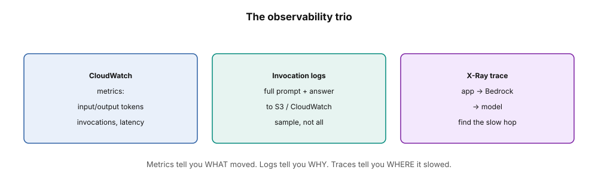
How to read this. CloudWatch holds the numbers: tokens, invocations, latency. Invocation logs hold the full prompt and answer, and X-Ray holds the path from app to model. Sample the logs instead of storing every prompt forever.
14. Model invocation logging and X-Ray tracing
Metrics show that something is wrong. Logs and traces show what is wrong.
What was said, and where the time went
Model invocation logging records the full request and response of Bedrock calls. It sends this data to S3 or CloudWatch Logs. It records the input prompt, the output completion, token counts, and timestamps. AWS X-Ray adds distributed tracing.
It follows one user request across every service. For example, it follows from API Gateway to Lambda to Bedrock to DynamoDB. It records how long each step took. You can see which step is slow or fails in a multi-step agent chain.
Metrics combine data. Debugging needs specific data. The dashboard shows output tokens tripled. Only the logs show the prompt version that caused this.
An agent takes 40 seconds. Only a trace shows if the time went to the model, a tool call, or a slow database. Without logging, hallucinations and cost spikes are mysteries. You cannot reproduce them. Without tracing, multi-step latency is a guess.
To enable invocation logging: Go to Bedrock settings. Choose S3, CloudWatch Logs, or both. Each log record includes the request body, response body, model ID, and token counts. Encrypt or disable logging in sensitive environments. Logs contain raw prompts and responses.
These may include PII. In healthcare or finance, the exam expects KMS encryption on the log destination. Or, disable logging if compliance forbids it. Logging invocations to an unencrypted bucket in healthcare is a distractor. Use CloudWatch Logs Insights to query for prompt and response forensics.
Find the longest responses, the most expensive calls, or every call that used a specific prompt version. Enable X-Ray tracing on your Lambda functions, API Gateway, and agent steps. Each request gets a trace ID. Each service call becomes a segment with timing. For an agent, the trace shows the sequence. For example, agent reasoning to tool call 1 to model call to tool call 2 to final answer.
The longest segment is your bottleneck. Bedrock's agent tracing and the enableTrace option on agent invocation show the reasoning steps inside the agent. Tool and multi-agent observability means tracking call patterns. It shows which tools fire most. It shows multi-agent coordination, like supervisor to collaborator handoffs. It shows usage baselines so anomalies are clear.
An agent answers product questions in 38 seconds on average. The X-Ray trace for one request is:
Trace total: 38.2s
API Gateway + Lambda overhead: 0.4s
Agent reasoning (model call 1): 4.1s
Tool call: product database query: 29.8s <-- bottleneck
Agent reasoning (model call 2): 3.2s
Response formatting: 0.7s
Reading: the model is fine. The database tool call eats 78% of
the time. Fix the query or cache its results; do not buy a faster
model or provisioned throughput. The trace just saved you from
optimizing the wrong component.
bottleneck share = slowest span / trace total
Here: trace total is the sum of all spans. The fix targets the longest span, not the model. From the numbers above: the database tool call takes 29.8 seconds of a 38.2 second trace. So, 29.8 / 38.2 is about 78% of the time. Fix the query or cache its results. Do not buy a faster model.
Logs answer "what did we ask and what did it say". Traces answer "where did the time go". You need both.
Read the diagram: The bottom chain does the actual work from left to right. This includes tool call 1, model call, tool call 2, and the final answer. Each step has a trace span on the timeline above it. The longest span is the bottleneck.
Read it first. Full request and response payloads go to S3 and CloudWatch Logs below. The trace says "tool 2 was slow". The logs say "here is the exact query and response". Metrics, logs, and traces are three views of the same request.
What breaks: If you disable logging, you cannot reconstruct what the model was asked. So, cost and hallucination forensics are not possible. Unencrypted logs in a regulated workload are a compliance violation. This is not only a debugging gap. If X-Ray is not enabled on the Lambda functions, the trace has gaps. The slow step hides between instrumented services.
Trap
CloudTrail does not show prompts and responses. CloudTrail records API-level events. It records who called InvokeModel, when, and from where. CloudTrail does not record prompt or response bodies.
Prompt and response forensics need model invocation logging to S3 or CloudWatch Logs. The exam tests this difference. A scenario asks which service records the full prompt text for debugging. This scenario wants invocation logging. CloudTrail is the wrong answer.
The exam asks this: "A multi-step agent is slow sometimes. The team must find which step causes the delay. The team must audit exact prompts later.
The data is healthcare data." Answer, select three: Use X-Ray tracing across the agent chain. Use model invocation logging to S3 with KMS encryption. Use CloudWatch Logs Insights for analysis. Distractors are: CloudTrail for prompt forensics (wrong plane), unencrypted logging (compliance violation), "add provisioned throughput" (optimizes the wrong component without evidence).
Why this comes next. All levers are in one place. Chapter 15 puts them into the ladder. This is the order you use them. This is the portfolio answer the exam rewards.
Next: The cost ladder. All levers are in order.
15. Best practices: the cost ladder
The whole domain is in one ordered list. The cheapest lever is first. The most expensive lever is last.
The ladder, cheapest first
- Measure first: Use CloudWatch metrics, dashboards, and anomaly detection. Do not optimize without data.
- Shrink the prompt: Use context pruning, prompt compression, and output caps. This lever is free.
- Tune the retrieval: Use fewer, better chunks. Use lower top-k. Rerank and truncate. Retrieved context is usually the biggest token cost.
- Skip the call completely: Use semantic caching for repeated questions. Use deterministic hashing for identical questions.
- Discount the static prefix: Use prompt caching for repeated long system prompts and few-shot blocks.
- Make the model the correct size. Use prompt routers and cascading. Use a small model for simple requests. Use a flagship model for complex requests.
- Put repeated behavior into a small model. Use fine-tuning or distillation for narrow tasks at a large scale. This is the most costly action. Do this only after you use the free actions.
- Delay work that can wait. Use batch inference for offline work. This reduces the price by about 50 percent.
- Ensure the baseline. Use provisioned throughput for steady traffic. Use on-demand overflow for sudden increases in traffic.
- Route across regions. Use inference profiles for capacity, failover, and data residency.
- Stream responses. This reduces perceived latency. It does not change the model.
- Retry correctly. Use exponential backoff with jitter for throttling. Use structural capacity for sustained overload.
- Control spend. Use AWS Budgets. Use Cost Anomaly Detection. Use token tagging. Use prompt versioning in Prompt Management.
This ladder is the main part of the domain. The exam's best-practice questions are almost always ladder questions. The correct answer is the cheapest action that fits the scenario's limits. "Overnight" means batch. "Repeated questions" means semantic caching.
"Same long prefix" means prompt caching. "Simple queries on a flagship" means routing. "Steady baseline with SLA" means provisioned throughput. Go down the ladder. Do not go up the ladder.
This is the full-stack answer. The exam likes this shape the most. This is a production chat application on a flagship model.
Starting point: 1M calls/mo on a flagship model, 3,000 input +
400 output tokens/call, illustrative $3.00/$15.00 per 1M.
input: 3.0B tokens * $3.00/1M = $9,000
output: 0.4B tokens * $15.00/1M = $6,000
total = $15,000/mo.
Apply the ladder:
1. Prune + compress: 3,000 -> 1,200 input tokens. -$5,400
2. Prompt caching on the 800-token static prefix (90% off
cached portion, high hit rate). -$1,700
3. Semantic cache: 40% of questions repeat. -$3,200
4. Cascade: 70% of remaining calls go to a lite model
at ~1/12 the price. -$2,900
New total ~ $1,800/mo. 88% reduction, same UX,
verified by re-running evaluations after each step.
It stacks every action. Each action is for the scenario it fits. No action is extra. Note that it includes streaming (latency) and retries (reliability). The ladder is not only about cost.
Read the diagram. The ladder goes from the cheapest free action to the most expensive action. The cheapest free action is to measure first, shrink the prompt, and tune the retrieval. Then, skip the call (semantic cache).
Then, discount the prefix (prompt caching). Then, right-size (router). Then, bake it in (fine-tuning). Fine-tuning is the most costly step.
Then, defer (batch). Then, guarantee (provisioned throughput). Then, route (profiles). Then, stream. Then, retry. Then, govern spend at the top.
The order is important. Each step is more costly or more operational than the step below it. What breaks: If you use a costly step first, you waste money. For example, if you buy provisioned throughput before you compress prompts, you waste money. The free actions would have saved this money. If you skip "measure first", you optimize the wrong problem.
Read the diagram. The SaaS cost-control diagram maps the same ladder onto a production SaaS architecture. Lean prompts and semantic caching are at the request edge. Routers send traffic to the correct model tier.
Batch jobs drain offline work. PT covers the steady baseline with on-demand overflow. A CloudWatch dashboard with budgets and anomaly detection watches the whole stack. The pattern is the same. Only the deployment shape changes.
The scenario shapes
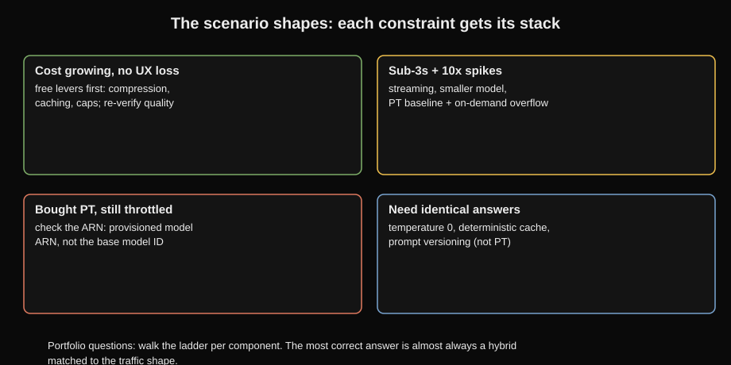
How to read this. Four cards: the exam's recurring scenario shapes with their answers. Takeaway: portfolio questions are a ladder walk, one cheapest fitting lever per component, and the most correct answer is usually a hybrid.
- Optimize under constraint. Token costs grow 30% each month. There is no UX degradation. Stack the free levers. Use prompt compression, caching, and caps. Re-verify quality with evaluation.
- Performance has volatility. Responses are less than 3 seconds. Traffic spikes are 10 times.
- Use streaming for perceived latency. Use smaller models. Use provisioned throughput for the baseline plus on-demand overflow. Use retries with backoff for spikes.
- Debug a broken setup. You bought provisioned throughput. The system still throttles. Check the invocation target. It must be the provisioned model ARN. It must not be the base model ID.
- Ensure consistency. 99.5% of identical queries must give identical results. Use temperature 0. Use deterministic caching.
- Use prompt versioning. Temperature and top-p control randomness. This is a different topic. But cost and consistency meet here. Caching and versioning make behavior predictable.
- Ensure quality and control spend. Hallucinations increase. Spend increases. Evaluation jobs find quality regressions. Cost Anomaly Detection finds spend regressions.
The exam's portfolio question gives you a whole system. This system has chat, agents, and batch jobs. The question asks for the cost and latency design. The answer is a ladder walk. Each component gets its cheapest fitting lever. The portfolio is the stack.
Trap
There is not one best pricing model. The exam's most correct answer is almost always a hybrid. This hybrid matches the traffic shape. Use PT for the floor. Use on-demand for the spikes.
Use batch for the offline tail. Use caching for the repeated head. Any option that uses a single lever for a multi-constraint scenario is a distractor. Read every constraint in the stem. Map each constraint to one ladder step. Pick the answer that covers all constraints.
Next: The question bank below drills every lever. Then Volume D5 moves to testing and validation.
You have the full optimization ladder. Drill this volume's questions. Then continue to Volume D5: Testing and Validation.
This volume covers the evaluation discipline behind the ladder. It covers benchmark testing, human and LLM-based evaluation, A/B testing, troubleshooting, and CI/CD for GenAI. The question bank and figures below stay in this volume. This is your Domain 4 drill ground.
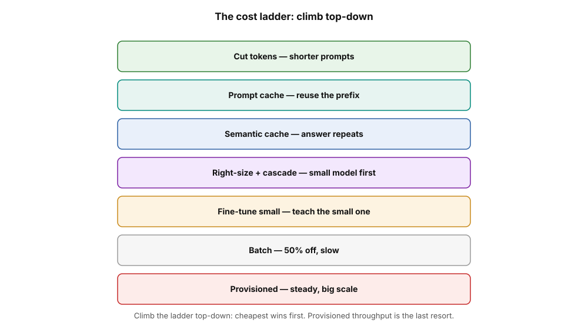
How to read this. Read top to bottom. Cut tokens, cache the prompt, cache answers, and right-size the model. Then fine-tune small, batch the slow work, provision only for steady load, and stop at the first win.
Questions: Topic 01, On-demand pricing and token economics
MCEasy A startup prototypes a chat feature. Daily usage is not predictable. It ranges from 50 to 5,000 requests. The CFO wants the lowest possible cost during the experiment. Which pricing model must the team use?
A. Provisioned Throughput with a 6-month commit.
B. On-demand inference
C. Batch inference
D. Purchase reserved model units for peak capacity.
Correct: B. On-demand billing charges only for tokens used. Idle hours have no cost. This is good for unpredictable low-volume traffic.
A is wrong: The hourly fee runs 24 hours per day, 7 days per week. Quiet days still cost the full price. C is wrong: Batch has hours of latency. This is not good for an interactive chat prototype. D is wrong: Reserving for peak traffic means you pay peak prices during low traffic. "Reserved model units" is another name for provisioned throughput.
MCMedium An application sends a 2,000-token system prompt. It also sends an average of 800 tokens of conversation history on every call. It receives 250-token responses. The monthly bill increases 40% after adding 10 more turns of history retention. Traffic did not increase. What is the most probable cause?
A. Output token prices increased.
B. Input tokens grew because full history is resent every turn.
C. It switched the model to a larger one.
D. It retries throttling errors.
Correct: B. The system bills conversation history again as input tokens on every call. More retained turns mean more input tokens per call. This happens even with flat traffic. This is the silent multiplier from Topic 01.
A is wrong: Output tokens did not change. The input drives the symptom. C is wrong: The scenario does not state that the model changed. A model change would alter per-token rates.
It would not track history length. D is wrong: Retries increase invocation counts. They do not increase per-call token size. The bill increase correlates with history length.
MCHard A company makes 3M inference calls per month. Each call uses 1,500 input tokens and 300 output tokens. The flagship model costs $3.00 per million input tokens. It costs $15.00 per million output tokens.
A lightweight model costs $0.25 per million input tokens. It costs $1.25 per million output tokens. The lightweight model handles 85% of the traffic with equal quality. The flagship model handles the rest. What is the approximate monthly saving of the cascaded design?
A. $1,900
B. $9,000
C. $15,000
D. $21,000
Correct: D. The all-flagship cost per call is $0.009. Multiply 1,500 by $3.00/1M.
Multiply 300 by $15.00/1M. Add the two results. This is $0.0045 + $0.0045. The total is $0.009.
Multiply $0.009 by 3M calls. This is $27,000 per month. The lite-model cost per call is $0.00075. Multiply 1,500 by $0.25/1M. Multiply 300 by $1.25/1M. Add the two results.
This is $0.000375 + $0.000375. The total is $0.00075. The cascaded cost is $5,962.50. Multiply 2.55M lite calls by $0.00075. This is $1,912.50. Multiply 450k flagship calls by $0.009.
This is $4,050. Add $1,912.50 and $4,050. The total is $5,962.50. The savings are $21,037.50. Subtract $5,962.50 from $27,000. The savings are approximately $21,000.
A ($1,900) is the lite-only part of the cascaded bill. It is not the saving. B ($9,000) shows only part of the calculation.
C ($15,000) does not match the baseline. It does not match the saving. Do not calculate only one token type. Do not forget to subtract the cascaded total from the baseline.
MREasy Which TWO statements about on-demand inference pricing are true? (Select TWO)
A. You pay for each input token. You pay for each output token at the model's rates.
B. You pay an hourly fee for reserved capacity.
C. Idle hours cost nothing.
D. Output tokens are always free.
E. Pricing needs a 1-month minimum commit.
Correct: A, C. You pay for each token with on-demand pricing. There is no commitment. The bill is zero if you make no calls.
B is wrong. Hourly fees are for provisioned throughput. They are not for on-demand. D is wrong.
You pay for output tokens. Output tokens cost more than input tokens. E is wrong. There is no commit. This describes provisioned throughput.
MRMedium A team wants to reduce its on-demand bill. The team will not change models. Which TWO actions directly reduce billed tokens? (Select TWO)
A. Make the system prompt shorter. Use a window for the conversation history.
B. Set the maxTokens. Add concise-answer instructions.
C. Increase the temperature from 0.2 to 0.9.
D. Change from Converse to InvokeModel.
E. Turn on detailed CloudTrail logging.
Correct: A, B. A reduces input tokens per call. B limits output tokens per call. Both actions reduce the billed quantity in the cost calculation.
C is wrong: Temperature controls randomness. It does not control token counts or cost. D is wrong: The API choice does not change token counts for the same prompt and model. E is wrong: CloudTrail is audit logging. It adds log storage cost. It records no information about tokens.
MRHard A multi-tenant SaaS application bills each tenant for their GenAI usage. Which TWO mechanisms give the team per-tenant cost visibility and control on Bedrock? (Select TWO)
A. Tag invocations per tenant. Analyze InputTokenCount/OutputTokenCount in CloudWatch.
B. Put each tenant on a separate provisioned throughput purchase.
C. Send model invocation logs to S3. Use per-tenant prefixes for usage forensics.
D. Use the monthly AWS invoice total. Divide it equally.
E. Turn off CloudWatch metrics to save monitoring cost.
Correct: A, C. A gives token metrics for each tenant. This helps with chargeback. C gives request and response data for each tenant. This helps when a tenant questions usage. This also helps when you must find the cause of a usage spike.
B is wrong: A separate PT for each tenant uses too many resources. It does not measure usage. It is a capacity tool.
It is not a metering tool. D is wrong: Even splits do not depend on usage. They penalize tenants with low usage. E is wrong: Disabling metrics removes the visibility that the scenario needs.
Questions: Topic 02, Token efficiency
MCEasy A chatbot sends the full 30-turn conversation history with every call. The history is 3,000 tokens on average. What is the simplest change to reduce input-token cost?
A. Use the last 6 turns of history. Or summarize older turns.
B. Make the temperature higher.
C. Change to InvokeModel.
D. Turn on detailed monitoring.
Correct: A. Context pruning removes input tokens from every call. It costs nothing to implement.
B is wrong: Temperature changes randomness. It does not change token counts. C is wrong: The API does not change token counts. D is wrong: Monitoring shows cost. It does not reduce cost.
MCMedium A summarizer's quality scores decrease after strong prompt compression. The team compressed a 2,000-token instruction set to 200 tokens in one edit. What is the correct recovery?
A. Restore the original prompt. Compression never works.
B. Re-expand selectively. Re-evaluate at each step. Find the smallest prompt that keeps quality.
C. Use a larger model to compensate.
D. Increase maxTokens
Correct: B. Compression is an optimization loop. Shrink the prompt.
Evaluate the prompt. Stop when quality changes. One large edit overshoots. Iterate back up.
A is wrong: compression works if you do it in small steps with evaluation. C is wrong: a bigger model for a damaged prompt is an expensive, wrong lever. D is wrong: output length does not repair instruction quality.
MCHard Token costs grow 30% each month. Prompts include long histories. Prompts include verbose instructions.
Prompts include uncapped outputs. The CFO demands cost cuts. The CFO does not want UX degradation. Which response is most correct?
A. Switch all traffic to the cheapest model now.
B. Prune context. Compress prompts. Cap outputs. Track tokens per feature. Re-evaluate quality after each change.
C. Buy provisioned throughput.
D. Move the workload to batch inference.
Correct: B. This answer uses many levers. Do free prompt optimizations first. Verify each optimization against quality. The CFO demands no UX degradation. This demands re-evaluation.
A is wrong: a blind model switch risks the UX. The CFO wants to protect the UX. C is wrong: capacity does not cut token-driven cost. D is wrong: the workload's interactivity is not stated as changeable. Batch is not a general cost fix.
MREasy Which TWO items directly reduce billed tokens per call? (Select TWO)
A. Remove duplicate paragraphs from the system prompt.
B. Set maxTokens with concise-answer instructions.
C. Raise top-p from 0.9 to 1.0.
D. Enable X-Ray tracing.
E. Use a longer model ID.
Correct: A, B. A reduces input tokens. B limits output tokens.
C is wrong: top-p changes sampling diversity. It does not change token counts. D is wrong: tracing adds observability overhead. It does not save tokens. E is nonsense.
MRMedium A RAG application puts 10 retrieved chunks into every prompt. The application does this to be safe. Which TWO changes make token use better? The changes must not make answer quality worse. (Select TWO)
A. Get fewer chunks. Get better-ranked chunks. Use hybrid search and reranking.
B. Make the instruction text around the chunks shorter.
C. Send all 10 chunks. Make the temperature lower.
D. Turn off chunk overlap completely.
E. Increase the embedding dimensions.
Correct: A, B. A keeps the correct context. It removes filler parts. B removes the wrapper text. Both methods reduce input tokens. They use quality checks.
C is wrong: Temperature does not reduce tokens. D is wrong: Overlap removal is a chunking quality choice. It does not guarantee token reduction. It can harm retrieval. E is wrong: Embedding dimensions affect storage and accuracy. They do not affect prompt token counts.
MRHard Which TWO statements are true about token efficiency and other cost levers? (Select TWO)
A. A leaner prompt increases the benefit of prompt caching, batch, and smaller models.
B. Token efficiency must come before buying provisioned throughput.
C. Token efficiency replaces the need for monitoring.
D. Prompt compression removes the need for model evaluation.
E. Token efficiency only matters for output tokens.
Correct: A, B. A: Every lever prices tokens. Fewer tokens increase the effect of all levers. B: Do not reserve capacity for waste. Remove waste first.
C is wrong: You still need metrics. Metrics show if efficiency worked. D is wrong: Compression needs evaluation. It does not replace evaluation. E is wrong: Input tokens usually make up most of the bill.
Questions: Topic 03, Prompt caching
An agent sends a 10,000-token tool specification each turn. The specification is always the same. Which feature makes the input-token cost much lower?
A. Provisioned Throughput
B. Use prompt caching. Put a cache point before the tool specification.
C. Batch inference
D. Make the temperature higher.
Correct: B. The agent sends the same static text many times. This is a good case for prompt caching. You pay much less for cached input tokens.
A is wrong: PT gives you capacity. It does not make repeated input tokens cheaper. C is wrong: Batch is for offline work.
It has hours of delay. It is not for an interactive agent. D is wrong: Temperature changes randomness. It does not change cost.
MCMedium A team used prompt caching. They see almost no cache hits. The system prompt has a timestamp and a user ID at the start. It also has 8,000 static tokens after that. What must they change?
A. Buy provisioned throughput.
B. Move the dynamic fields after the cache point. This makes the cached prefix exactly the same.
C. Change to batch inference.
D. Make the model's context window bigger.
Correct: B. Any change before the cache point makes the cache invalid. Move the timestamp and user ID after the cache point. This makes the prefix the same for all calls. This brings back cache hits.
A is wrong: Capacity does not fix cache misses. C is wrong: Batch changes delay. It does not make the prefix stable. D is wrong: The context window is not the problem. Prefix changes are the problem.
MCHard An application makes one call every 30 minutes. The call has a 6,000-token static prefix. Prompt caching is on. The bill did not change much. What is the most probable reason?
A. The cache TTL expires between calls. The default TTL is about 5 minutes. So, every call pays for the full prefix recompute. It also pays the cache-write surcharge.
B. The 6,000-token prefix is less than the minimum token threshold for caching.
C. The model does not support the Converse API.
D. The system bills cached input tokens at the standard rate.
Correct: A. Caching only costs money when the same prefix repeats inside the TTL. The calls have 30-minute gaps. The TTL is about 5 minutes.
So, every call does not use the cache. Each call pays for full recomputation. It also pays the write surcharge. This can cost more than no caching.
B is wrong: 6,000 tokens is more than the minimum prefix thresholds. C is wrong: The problem is the call spacing. It is not API support. Converse supports cache points on models that can use caching. D is wrong: The system bills cached input tokens at a lower rate. The problem is that no calls use the cache.
MREasy Which TWO items are necessary for prompt caching to work? (Select TWO)
A. The model must support caching. (for example, Claude 3.5+, Nova)
B. The cached prefix must meet the minimum token threshold.
C. The workload must use batch inference.
D. The application must run on EC2.
E. Set the temperature to 0.
Correct: A, B. Caching is a model function. Not all models use it. Caching needs a minimum prefix length before the cache point.
C is wrong: Caching works for real-time calls. It does not work for batch jobs. D is wrong: The compute platform does not matter. E is wrong: Temperature does not relate to caching.
MRMedium A company uses the Converse API. The system prompt is 12,000 tokens. The system prompt changes every week. Which TWO statements about prompt caching are true? (Select TWO)
A. Add a cachePoint after the system prompt content. This makes it the cached prefix.
B. The system bills cached input tokens at a lower rate. The system bills standard input tokens at a higher rate.
C. The cache stays forever after the system writes it.
D. Caching also makes output tokens cost less.
E. Changing the system prompt every week does not change the cache.
Correct: A, B. A is the Converse mechanism. A cachePoint marks the prefix. B is the pricing benefit.
C is wrong: Cache entries expire after the TTL. This is from minutes to about one hour. D is wrong: Only input tokens before the cache point cost less. Output tokens always cost full price. E is wrong: Any prefix change makes the cache invalid. After the weekly change, the first calls pay the full write again.
MRHard An application has throttling at peak time. It also has a repeated 8,000-token prefix. Which TWO actions together are the most correct response? (Select TWO)
A. Add prompt caching for the repeated prefix. This reduces input-token cost.
B. Add provisioned throughput for the steady baseline. This guarantees capacity.
C. Change the interactive workload to batch inference.
D. Remove the cache point to reduce latency.
E. Increase temperature to reduce throttling.
Correct: A, B. Two problems need two solutions. Caching reduces the repeated-prefix cost. Provisioned throughput solves the capacity problem. This question asks you to match each solution to its problem.
C is wrong: Batch inference has hours of latency. The workload is interactive. D is wrong: Removing the cache point increases cost. It does not help throttling. E is wrong: Temperature controls randomness. It does not control capacity.
Questions: Topic 04, Semantic caching
MCEasy A FAQ bot gets millions of questions. The questions repeat often with different words. What reduces cost and latency?
A. A semantic cache in front of the model with similarity matching
B. Provisioned throughput
C. A larger model
D. Longer system prompts
Correct: A. Repeated meanings are the semantic cache use case. Hits skip the model call. This cuts cost and latency.
B is wrong. Capacity does not remove repeated work. C is wrong. A larger model costs more for each call. D is wrong. Longer prompts cost more.
MCMedium After semantic cache deployment, users sometimes get answers to similar but different questions. What must the team tune?
A. Raise the similarity threshold. Evaluate hit quality.
B. Lower the similarity threshold to increase hits.
C. Disable the TTL.
D. Change the cache from ElastiCache to S3.
Correct: A. Wrong but similar answers mean the threshold is too loose. Raise the threshold. This trades some hit rate for correctness. Evaluation validates this.
B is wrong. Lowering the threshold makes the problem worse. C is wrong. TTL controls staleness.
It does not control similarity mismatches. D is wrong. S3 latency is wrong for a lookup cache. It does not fix threshold tuning.
MCHard A personalized recommendation engine uses semantic caching. Each query is specific to a user. The goal is to "cut costs 60%." Why will this fail?
A. Semantic caches cannot store personalized data.
B. The hit rate will collapse. Each query is unique. The cache adds complexity. It gives no savings.
C. ElastiCache does not support embeddings.
D. Bedrock does not allow personalized queries.
Correct: B. Semantic caching needs repetition. Queries for one user do not repeat. The hit rate becomes zero. This is the exam's clear rejection case.
A is wrong: Caches can store any data. The problem is the hit rate, not the capability. C is wrong: The architecture can store embeddings in another place. The economics still fail. D is wrong: This restriction does not exist.
MREasy Which TWO things make semantic caching different from prompt caching? (Select TWO)
A. Semantic caching can stop the model call completely. Prompt caching reduces token cost for calls that still happen.
B. Semantic caching finds matches by meaning. Prompt caching works with a static prefix that is byte-identical.
C. They are the same feature with two names.
D. Prompt caching works without Bedrock.
E. Semantic caching is a Bedrock pricing feature.
Correct: A, B. Call elimination versus token discounting are two differences. Meaning-matching versus exact-prefix matching are two other differences.
C is wrong: They are different mechanisms. D is wrong: Prompt caching is a Bedrock feature. Semantic caching is your architecture. E is wrong: You reversed this statement.
MRMedium Which TWO cache-layer choices are valid? Which TWO trade-offs do they have? (Select TWO)
A. ElastiCache gives sub-millisecond lookups at high throughput.
B. DynamoDB is a serverless cache. It has no cluster to manage.
C. S3 is for the hot lookup path.
D. CloudTrail is the cache store.
E. The model's context window is the cache.
Correct: A, B. ElastiCache makes lookup speed better. DynamoDB makes operational simplicity better.
C is wrong: S3 latency is not good for a per-request hot path. D is wrong: CloudTrail is for audit logging. It is not a cache. E is nonsense: The context window is the working memory for each request.
MRHard A cached FAQ answer becomes wrong after a pricing change. Which TWO mechanisms keep the cache correct? (Select TWO)
A. TTLs make entries expire. This makes new answers regenerate.
B. Invalidate affected entries when source data changes.
C. Make the similarity threshold higher.
D. Change to a bigger model.
E. Turn off the cache forever.
Correct: A, B. TTLs control old data automatically. Explicit invalidation corrects entries at once when data changes.
C is wrong: Thresholds control match quality. They do not control data freshness. D is wrong: Model size does not fix old cache entries. E is wrong: It removes the savings. It does not control old data.
Questions: Topic 05, Retrieval tuning
MCEasy A RAG application gets 10 chunks. Each chunk has 500 tokens per query. Analysis shows the answer is in the top 3 chunks most times. Token costs increase. What is the cheapest first step? This step must keep quality.
A. Change to a bigger model.
B. Make top-k 3 from 10. Run evaluation again.
C. Buy provisioned throughput.
D. Turn on prompt caching on the retrieved chunks.
Correct: B. The 7 unused chunks waste tokens. Change top-k to 3. This removes 70% of retrieval tokens for no cost. Run evaluation again. This checks if quality stays the same.
A is wrong: A bigger model costs more per token. It cannot fix a retrieval that finds the answer. C is wrong: PT is a capacity tool. It is not a token-cost tool. D is wrong: Retrieved chunks are different for each query. There is no repeated static prefix to cache.
The MCMedium A team gets 20 candidate chunks for each query. The team gives all chunks to the model. Answers are correct. But the token bill is high. Irrelevant chunks sometimes confuse the model. Which design makes cost and quality better?
A. Get 20 chunks. Rerank the chunks. Keep only the top 3 chunks for the prompt.
B. Get 40 chunks for better coverage.
C. Remove the reranker to make latency less.
D. Make top-k 30. Change to a cheaper model.
Correct: A. Broad cheap retrieval protects recall. The reranker makes precision better. Truncating to the top 3 cuts tokens. It also removes distracting noise.
B is wrong: More chunks mean more cost and more noise. C is wrong: The reranker makes the broad first pass affordable. D is wrong: More chunks is the wrong direction. A cheaper model does not fix noisy context.
MCHard A RAG application's token spend went down 65%. This happened after tuning top-k from 10 to 3. But answer accuracy on the golden test set went down from 92% to 81%. The team confirmed the retriever still finds the correct chunk in its top 10. What is the most probable cause? What is the correct fix?
A. The model is too small. Change to the flagship model.
B. The answer chunk is now outside the top 3. Get chunks broadly. Rerank the chunks. Keep the top few chunks.
C. Enable batch inference for the retrieval calls.
D. Fine-tune the model on the document set.
Correct: B. The evidence shows that recall is good at top 10. But precision at top 3 lost the answer chunk. Retrieve many items.
Rerank items with precision. Truncate items. This restores the chunk. This does not restore the full token cost.
A is wrong: The model is not the problem. The chunk is absent. C is wrong: Batch changes latency.
Batch does not change which chunks reach the prompt. D is wrong: Documents change. Answers need sources. Fine-tuning for knowledge is a common error.
MREasy Which TWO levers cut RAG token cost for retrieval-tuning? (Select TWO)
A. Make top-k lower and evaluate again.
B. Rerank candidates and truncate to the best few.
C. Retrieve more chunks to be safe.
D. Use a larger model so chunks are less important.
E. Disable evaluation to move faster.
Correct: A, B. Both options reduce context tokens. Both options protect quality. They use fewer chunks. Or they use better-ranked chunks with truncation.
C is wrong: More chunks increase cost. More chunks add noise. D is wrong: Model size does not reduce context tokens. E is wrong: Tuning without re-evaluation changes the token cost. This causes hallucinations.
MRMedium A RAG application gives regulated product documents. The documents update every month. Which TWO statements about optimizing the application are correct? (Select TWO)
A. Metadata filtering by document date makes the candidate set smaller before vector search.
B. Fine-tuning the model with this month's documents is the most correct optimization.
C. Denser semantic chunks put more signal in fewer tokens.
D. Caching the retrieved chunks with prompt caching works because chunks repeat exactly.
E. Retrieval tuning is not necessary after you buy provisioned throughput.
Correct: A, C. Date filtering makes fewer candidates. So, a smaller top-k still finds answers. Denser chunks use fewer tokens per chunk. Both are retrieval tuning.
B is wrong: Monthly changing knowledge becomes old in weights. It cannot show sources. That is RAG's job. It is not fine-tuning's job.
D is wrong: Retrieved chunks are different for each query. So, there is no stable prefix to cache. E is wrong: PT buys capacity. It does not make prompts smaller.
MRHard Which TWO orderings follow the optimization ladder correctly for a RAG cost problem? (Select TWO)
A. Tune retrieval (top-k, rerank) before you buy provisioned throughput.
B. Measure the per-call token breakdown before you cut chunks.
C. Buy provisioned throughput first. Then, tune retrieval.
D. Increase top-k before you try reranking.
E. Fine-tune the model before you try retrieval tuning.
Correct: A, B. Free levers come before committed levers. Retrieval tuning is free. PT is a commitment. Measurement comes before cutting.
C is wrong. Do not commit to capacity before you remove waste. This reserves capacity for waste. D is wrong.
More chunks is the wrong direction. Rerank-then-truncate is the quality-preserving cut. E is wrong. Training is the most expensive lever. It comes last.
Questions: Topic 06, Right-sizing and cascading
MCEasy Analysis shows 80% of requests are simple FAQ lookups. An expensive flagship model serves these requests. A lightweight model answers them with no quality difference. What is the most cost-effective change?
A. Fine-tune the flagship model
B. Route simple queries to the lightweight model. Keep complex queries on the flagship.
C. Enable prompt caching
D. Buy provisioned throughput for the flagship
Correct: B. The workload is bimodal. The small model already matches quality on simple work. Cascading saves about 10 times the per-token cost on 80% of traffic.
A is wrong. Fine-tuning is for baked-in behavior. It is not for a cost problem with an already-working small model. C is wrong.
Caching helps only with repeated prefixes. It does not help with model choice. D is wrong. PT is capacity. It is not cost reduction.
MCMedium A team builds a cascade with a router model. The router model costs the same per call as the flagship model. What is wrong with this design?
A. Nothing; routers are always worth it
B. The router cost can remove the savings. The router must be almost free compared to the calls it routes.
C. Cascades need provisioned throughput.
D. The flagship model cannot get routed traffic.
Correct: B. Each request pays the router cost and one model call. An expensive router does not meet the purpose. Use rules, a small model, or the managed prompt router.
A is wrong: You must check router economics. C is wrong: Cascading works on demand. D is wrong: Routed traffic is normal invocations.
MCHard After a cascade deployment, costs went down 60%. But user complaints went up for complex queries. Metrics show the router sends 95% of traffic to the small model. This includes questions the small model answers badly. What is the fix?
A. Remove the cascade. Return to the flagship for all tasks.
B. Adjust the router's classification criteria. Monitor the quality for each route. Add low-confidence escalation to the flagship.
C. Increase the small model's temperature.
D. Turn on prompt caching on the flagship.
Correct: B. The router classifies incorrectly. The fix is better routing criteria. Add a confidence-based escalation path. Measure this path for each route. Routing is an optimization loop.
A is wrong: It removes the 60% saving. It does not fix the classifier. C is wrong: Temperature does not fix capability mismatch. D is wrong: Caching does not fix misrouted queries.
MREasy Which TWO describe a model cascade? (Select TWO)
A. A router sends simple requests to a cheap model. The router sends complex requests to a flagship model.
B. It requires fine-tuning both models.
C. It optimizes price-to-performance per request.
D. It guarantees lower latency for all requests.
E. It works only with batch inference.
Correct: A, C. Complexity-based routing is the mechanism. Quality per dollar is the metric.
B is wrong: No fine-tuning is necessary. D is wrong: Complex requests still take flagship time. E is wrong: Cascades are a real-time routing pattern.
MRMedium Which TWO metrics should a team track to validate a cascade? (Select TWO)
A. Track quality scores per route. Track small-model route scores. Track flagship route scores.
B. Track router escalation rates. Track router misclassification rates.
C. Track the total number of AWS regions used.
D. The router's favorite color
E. Batch job completion times
Correct: A, B. Per-route quality shows the small model works where you use it. Escalation rates show the router classifies correctly.
C is wrong: The region count is not important for routing quality. D is wrong: This is not a real answer. E is wrong: Batch metrics are for offline jobs. They are not for a real-time cascade.
MRHard Which TWO scenarios are POOR fits for cascading? (Select TWO)
A. Every request needs flagship reasoning. Traffic is complex in the same way.
B. You cannot know request difficulty before generation. The router guesses randomly.
C. 90% of requests are simple lookups. The small model has verified equal quality.
D. The small model is 10 times cheaper. It has lower latency.
E. Traffic is steady and predictable.
Correct: A, B. A: No easy traffic means no savings. It only adds complexity. B: A router that cannot classify adds cost. It misroutes without benefit.
C is wrong: This is the ideal cascade scenario. D is wrong: Cheap and fast small models help cascading. E is wrong: Traffic shape affects the PT decision. It does not affect the cascade decision.
Questions: Topic 07, Fine-tuning for cost
MCEasy A company uses a large system prompt. This prompt makes 50M responses each month. The prompt makes the brand voice consistent. The voice rules do not change. Token costs are too high. Which method is most correct?
A. Fine-tune a small model. Use brand-voice examples. The style will be in the model weights.
B. Add the documents to a knowledge base.
C. Make the system prompt longer. Add more examples.
D. Use batch inference for the brand-voice calls.
Correct: A. The model weights have the stable, repeated behavior. This removes the large prompt from each call. A small, cheap model does the work.
B is wrong: RAG gives knowledge. RAG does not give behavior. C is wrong: A longer prompt makes the token bill higher. D is wrong: Batch changes latency. Batch does not change the token cost for each call.
MCMedium A team fine-tuned a model. The model classifies support tickets. The training job was successful. But every model use fails. The model needs provisioned throughput to work. What is the most probable cause?
A. The training data was too small.
B. The application did not buy provisioned throughput for the custom model.
C. The temperature is set too high.
D. Prompt caching is not enabled.
Correct: B. Custom models need provisioned throughput. You cannot call them without it. "Training succeeded but calls fail" means the throughput is absent. It does not mean the data is absent.
A is wrong: Bad training data makes bad answers. It does not make calls fail. C is wrong: Temperature changes randomness. It does not change if you can call the model. D is wrong: Caching reduces cost. It does not relate to call failures.
MCHard A company makes 800k classification calls each month. It uses a flagship model. Each call costs $0.006. The total cost is $4,800 each month. A small distilled model would cost $0.0005 per call.
This is $400 each month. It also costs $14,400 each month for provisioned throughput. This is for serving. The training costs $3,000 one time. What is the correct recommendation?
A. Distill the model. The monthly saving is clear.
B. Do not distill the model. $400 + $14,400 = $14,800 each month. This is more than the current $4,800 each month.
C. Distill the model. Serve it on-demand to avoid the PT cost.
D. Fine-tune the flagship model instead. This avoids the PT cost.
Correct: B. The math is the whole question. The serving cost alone is 3 times the current bill. Fine-tuning works if the volume is large enough. Then, per-call savings are more than the fixed serving cost.
A is wrong: It does not do the math the exam needs. C is wrong: You cannot serve custom models that need PT on-demand. D is wrong: A fine-tuned flagship model still costs the same per token. The volume does not make any training cost worth it.
MREasy Which TWO describe good uses of fine-tuning or distillation for cost? (Select TWO)
A. A small, repeated task with stable behavior at very high volume.
B. Documents update each month. The system needs cited answers.
C. Put a consistent tone into a small model. This makes the system prompt smaller.
D. Answer questions from private knowledge bases.
E. Do one-time creative tasks. There is no repetition.
Correct: A, C. Both are stable actions. The system repeats them many times. Training once is better than paying for each prompt call.
B is wrong: Knowledge changes. The weights become old. The system cannot cite sources.
This is RAG. D is wrong: Private knowledge is retrieval. It is not an action. E is wrong: One-time tasks never pay back the training cost.
MRMedium A team wants to reduce the cost of a high-volume classification task. Which TWO options make fine-tuning the correct answer? (Select TWO)
A. The task is small. The system repeats it millions of times. The action is stable.
B. The team already tried prompt work, retrieval tuning, and cascading.
C. The classification rules change each week.
D. The team has no labeled examples.
E. Traffic is 10,000 calls each month.
Correct: A, B. Stable narrow repetition at scale is the fine-tuning shape. It is the last lever. Use it only after you use all free levers.
C is wrong: Rules that change every week become old in weights. D is wrong: Fine-tuning needs hundreds to thousands of good examples. E is wrong: 10k calls never pay for training and serving commits.
MRHard Which TWO statements about fine-tuning economics are true in this domain? (Select TWO)
A. Training is a one-time cost. The payback needs enough monthly volume.
B. Serving a custom model usually needs provisioned throughput, an hourly commit.
C. Fine-tuning is the first lever to try for any cost problem.
D. Distillation is the answer when knowledge changes every month.
E. Larger training sets always beat better examples.
Correct: A, B. One-time training is paid back over volume. The serving commit is also part of the economic test.
C is wrong: Fine-tuning is the last lever. Use it after prompt, retrieval, and routing work. D is wrong: Changing knowledge is RAG. It is never distillation. E is wrong: Example quality is better than quantity.
Questions: Topic 08, Latency, throughput, streaming
MCEasy Users say a chatbot "feels slow." Answers take 10 seconds to appear. The answers are correct. What is the first change to make?
A. Turn on streaming with ConverseStream. Tokens show one by one.
B. Buy provisioned throughput.
C. Change to batch inference.
D. Add more few-shot examples to the prompt.
Correct: A. "Feels slow" with correct answers means a perceived-latency problem. Streaming makes the first token appear faster. Users notice this.
B is wrong: PT fixes capacity changes. It does not fix the blank screen wait. C is wrong: Batch is slower. This is the opposite direction. D is wrong: Longer prompts make the first token appear slower.
MCMedium A team streams model output with API Gateway to web clients. Very long responses stop sometimes. What is the most probable cause?
A. The model stopped making output.
B. API Gateway payload and timeout limits on long streaming connections.
C. Prompt caching ended during the stream.
D. The temperature is too high.
Correct: B. API Gateway has payload and timeout limits. This makes it the wrong carrier for very long streams. The exam tests this clearly. Use WebSockets or direct streaming to fix this.
A is wrong: the model makes good output. The transport drops the output. C is wrong: caching changes input processing. Caching does not change stream continuity. D is wrong: temperature changes content randomness. Temperature does not change connection time.
MCHard An application has a hard SLA. The application must complete responses in less than 3 seconds, p99. Responses are 250 tokens on average. Which combination is most correct?
A. Streaming alone
B. Use a smaller, faster model. Add provisioned throughput for the steady baseline. Use streaming for perceived latency.
C. Use batch inference with a priority flag.
D. Use prompt caching only.
Correct: B. A hard complete-response SLA needs actual speed. Use a smaller model.
The SLA needs guaranteed capacity without queuing. Use provisioned throughput. Streaming helps perception. Each part helps one sub-constraint.
A is wrong: streaming makes perception better. Streaming does not guarantee total time. C is wrong: batch has no latency SLA. D is wrong: caching only reduces input processing. Caching cannot guarantee a 250-token generation finishes in 3 seconds.
MREasy Which TWO statements about streaming are true? (Select TWO)
A. It reduces time to first token. The user perceives this reduction.
B. It changes the total generation time of the response.
C. It uses ConverseStream or InvokeModelWithResponseStream.
D. It reduces the number of billed tokens.
E. It works for batch inference jobs.
Correct: A, C. Streaming gives tokens one by one. This makes the speed seem faster. It uses the streaming API types.
B is wrong: The total time to make output does not change. D is wrong: The token counts and the billing are the same. E is wrong: Batch jobs write results to S3. There is no live user to stream to.
MRMedium A voice assistant needs the lowest time to first token. Which TWO actions make the TTFT lower? (Select TWO)
A. Use a smaller model. This model makes tokens faster.
B. Use prompt caching. The system does not compute the static prefix again.
C. Raising maxTokens
D. Change from streaming to non-streaming.
E. Add provisioned throughput only when the system is not busy.
Correct: A, B. A makes the processing time per token lower. This includes the first token. B skips prefix recomputation. This helps only the TTFT.
C is wrong: maxTokens changes the total length. It does not change the first token. D is wrong: Non-streaming makes the first visible token later.
It waits until the system finishes. E is wrong: PT during idle periods does not fix any problem. And PT makes queueing variance lower. It does not make compute time lower.
MRHard Two teams talk about latency fixes. Team X says "streaming makes the model faster." Team Y says "provisioned throughput makes responses more consistent." Which TWO corrections are correct? (Select TWO)
A. Streaming does not change generation speed. It changes when you see the output.
B. Provisioned throughput makes capacity and latency stable. It does not make output random.
C. Streaming makes p99 total latency 50% less.
D. Provisioned throughput makes outputs the same each time.
E. Both claims are correct.
Correct: A, B. A corrects the streaming error. B corrects the PT error. Output consistency depends on temperature and prompt. It does not depend on capacity.
C is wrong: Streaming does not make total latency less. D is wrong: PT does not change sampling randomness. E is wrong: Both claims mix the mechanism with a different benefit.
Questions: Topic 09, Batch inference
MCEasy A media company must classify 500,000 old support tickets. The company needs results in 24 hours. What is the most cost-effective method?
A. Use on-demand inference with many Lambda functions.
B. Use batch inference with S3 input and output.
C. Use Provisioned Throughput for one month.
D. Use real-time streaming inference.
Correct: B. Offline, latency-tolerant, high-volume batch inference costs about 50% less than on-demand. This is the correct answer.
A is wrong: This option has the full on-demand price. It also has the operational overhead of a fleet. C is wrong: A one-month hourly commit for a finite job wastes idle hours. D is wrong: Streaming makes perceived latency better for interactive users. There is no user here.
MCMedium A batch inference job finished. 2% of records have errors in the output file. The input was a JSONL file with 100,000 lines. What is the most probable cause? What is the correct next step?
A. The model overloads. Request a quota increase. Rerun everything.
B. Individual input lines were malformed. Fix those lines. Resubmit only those lines.
C. S3 eventual consistency corrupted the output. Wait. Re-read the output.
D. The IAM role expired during the job. Recreate the role. Rerun everything.
Correct: B. Batch jobs process lines one by one. They record errors for each line in the output.
A small error fraction means that input lines are malformed. It does not mean a system failure. Resubmit only the bad lines. This is an efficient fix.
A is wrong: Batch jobs do not throttle like on-demand jobs. A 2% line-error rate is not a capacity issue. C is wrong: S3 read-after-write is consistent. This does not make errors for each line. D is wrong: An expired role would make the whole job fail. It would not make 2% of lines fail.
MCHard A team wants to cut costs for a real-time fraud-scoring API. The p99 latency requirement is 800ms. The team wants to move it to batch inference. The proposal says 50% savings. Why is this wrong?
A. Batch inference costs more than on-demand for small jobs.
B. Batch inference has hours-scale latency. It has no SLA. This violates the 800ms requirement.
C. Fraud scoring models do not have batch mode support.
D. Batch inference cannot read from S3.
Correct: B. The latency requirement makes batch impossible. Cost savings do not matter if the architecture cannot meet the SLA. This is the main batch trap on the exam. It is a real discount for the wrong workload.
A is wrong: Batch is cheaper per token. This is true for any job size. C is wrong: Batch supports the same models as on-demand invocation. D is wrong: S3 input is the way to submit batch jobs.
MREasy Which TWO describe batch inference? (Select TWO)
A. Input is a JSONL file in S3. Output goes to S3.
B. It costs about 50% less than on-demand for the same model.
C. It guarantees sub-second responses.
D. It needs provisioned throughput.
E. It processes requests at the same time.
Correct: A, B. S3 input and S3 output with async processing is the mechanism. The 50% discount is the reason to use it.
C is wrong: Latency is hours. There is no SLA. D is wrong: Batch does not need reserved capacity. E is wrong: It is asynchronous by design.
MRMedium A nightly ETL job uses batch inference. Which TWO statements are true about its IAM and data setup? (Select TWO)
A. An IAM role must give Bedrock read access to the input S3 location.
B. An IAM role must give Bedrock write access to the output S3 location.
C. Upload the input file with the Converse API.
D. The API response body shows the results.
E. The job needs a VPC endpoint to reach S3.
Correct: A, B. Bedrock uses the given role. It must read the input. It must write the output.
C is wrong: The input is an S3 file. It is not an API payload. D is wrong: The results go to S3 as JSONL. Nothing returns at the same time. E is wrong: The basic S3 flow does not need a VPC endpoint.
MRHard A company runs an interactive chatbot. It also runs a nightly document summarization job. Which TWO choices make the most cost-effective architecture? (Select TWO)
A. Use batch inference for the nightly summarization job.
B. Use on-demand or provisioned throughput for the interactive chatbot. This depends on the traffic shape.
C. Use batch inference for the interactive chatbot to make its cost 50 percent less.
D. Provisioned throughput for the nightly job to guarantee it finishes.
E. A single pricing model for both workloads to simplify billing
Correct: A, B. Each workload gets the lever that matches its latency limit. Batch is for offline. Real-time capacity is for interactive. This is the portfolio answer.
C is wrong: Batch latency breaks interactivity. D is wrong: PT commits hourly for a finite nightly job. This wastes idle hours. Batch already handles it cheaper. E is wrong: One lever for two different limits is what the exam punishes.
Questions: Topic 10, Provisioned Throughput
MCEasy An application serves 2M requests per day. The latency SLA is less than 3 seconds. Traffic is predictable. Which option best meets the SLA and controls cost?
A. On-demand inference only
B. Provisioned Throughput for the baseline plus on-demand for peaks
C. Batch inference
D. A larger model on on-demand
Correct: B. The hybrid is the exam's standard production answer. Reserved capacity guarantees the baseline's latency. On-demand absorbs peaks. It does not pay for idle peak capacity.
A is wrong: Shared on-demand capacity can throttle at peak. Latency varies. C is wrong: Hours of latency breaks the SLA.
D is wrong: A larger model is slower. It costs more per token. It does not address capacity. It does not address cost.
MCMedium A team bought Provisioned Throughput. CloudWatch still shows InvocationThrottles on the base model ID. The provisioned model shows near-zero invocations. What is wrong?
A. They need more model units.
B. The application still uses the base model ID. It does not use the provisioned model ARN.
C. Provisioned Throughput does not stop throttling.
D. The commitment term ends.
Correct: B. This is a common routing problem. Buying capacity does not help. Invocations must use the provisioned model ARN. The provisioned model has almost no invocations. This shows that the traffic goes to another place.
A is wrong: Adding units to an unused reservation does not fix the problem. C is wrong: PT stops on-demand throttling for routed traffic. This is the purpose of PT. D is wrong: An expired term would show errors on the provisioned ARN. It would not show zero usage.
MCHard Traffic analysis shows this: from midnight to 6am, traffic is almost zero. During business hours, traffic is steady at 300 RPM. From Friday 2pm to 6pm, traffic increases to 2,000 RPM. The team wants to use provisioned throughput. They want to size it for 2,000 RPM on a 6-month term. They want to "never throttle." What is the most correct critique?
A. The proposal is best. It removes all throttling risk.
B. Sizing PT for the spike wastes the hourly fee for 90% of hours. Provide for the 300 RPM baseline. Let on-demand plus retries absorb spikes.
C. Provisioned throughput cannot handle 2,000 RPM.
D. They should use batch inference for the Friday spike.
Correct: B. PT bills 24 hours a day, 7 days a week. You reserve 2,000 RPM of capacity for a 4-hour weekly spike. This means you pay peak prices for about 164 idle hours each week. The correct design provisions the floor. It overflows the spike.
A is wrong: "never throttle" is not free. The idle cost is too high. C is wrong: You can size PT to 2,000 RPM. The problem is money, not capability. D is wrong: The Friday spike is interactive traffic. Batch latency is not acceptable.
MREasy Which TWO statements about Provisioned Throughput are true? (Select TWO)
A. You pay an hourly rate for each model unit for the commitment term. You pay if you use it or not.
B. Invocations must use the provisioned model ARN. This uses the reserved capacity.
C. It is the cheapest option for spiky, unpredictable traffic.
D. It discounts per-token rates on the on-demand pool.
E. No commitment term is necessary.
Correct: A, B. You pay hourly for the commitment. You pay if you use it or not. You must use the routing requirement. These are the two main mechanics.
C is wrong: Idle hours make PT expensive for spiky traffic. D is wrong: PT is separate reserved capacity. It is not a discount on on-demand tokens. E is wrong: 1-month or 6-month terms are the commitment mechanism.
MRMedium A steady-state API grows 10% each month. Which TWO features help provisioned throughput handle the growth? These features do not need manual resizing. (Select TWO)
A. Autoscaling policies add model units. This happens when utilization crosses a threshold.
B. The scaling policy has minimum and maximum unit bounds.
C. Change the workload to batch inference.
D. Delete the provisioned model. Make the provisioned model again every day.
E. Increase the temperature to make throughput higher.
Correct: A, B. Autoscaling changes units to match utilization. Minimum and maximum limits keep cost and capacity inside the planned limits.
C is wrong. Batch changes latency characteristics. It does not scale reserved capacity. D is wrong.
Daily recreation stops the commitment. It adds churn. E is wrong. Temperature affects randomness. It does not affect throughput.
MRHard After a model version upgrade, the team reports higher p99 latency on their provisioned throughput setup. There is no throttling. Which TWO causes can you investigate? (Select TWO)
A. The new model version is slower per token. The same unit count gives less throughput.
B. The application used the base model ID by mistake.
C. Prompt caching was off. This increased input processing time.
D. The commitment term is too short.
E. Batch inference pricing changed.
Correct: A, C. A: Model units are capacity for a specific model. A slower model version makes effective throughput per unit lower. C: Losing the cached prefix makes full prefix recomputation necessary. This increases the time to the first token.
B is wrong. The base model ID shows throttling on the on-demand pool. But the scenario says no throttling. D is wrong.
Term length changes price. It does not change latency. E is wrong. Batch pricing is not related to PT latency.
Questions: Topic 11, Inference profiles and routing
The MCEasy A model is in only two regions. The application needs automatic failover. This happens if one region throttles or has an outage. The application needs minimal code changes. What must the application call?
A. The bare model ID in one region
B. The inference profile ID (for example, with a us. prefix)
C. A provisioned throughput ARN in one region
D. The batch inference API
Correct: B. Inference profiles route across regions in the profile. They fail over automatically. This is the designed answer for regional resilience with minimal code.
A is wrong. A bare model ID keeps the application in one region. It has no failover. C is wrong.
PT reserves capacity in one region. It does not fail over. D is wrong. Batch is offline and takes hours.
MCMedium A healthcare application must keep all inference data inside the EU. Which inference profile prefix is correct?
A. global.
B. eu.
C. us.
D. apac.
Correct: B. The eu. prefix limits routing to EU regions. This meets the data-residency requirement.
A is wrong. global. can route anywhere. This breaks the rule. C and D are wrong. They route to the wrong areas.
MCHard A team confuses three routing features. Their goal is to send simple customer queries to a cheap model. They want to send complex queries to a flagship model. This will cut cost. Which feature must they use?
A. An inference profile with a us. prefix
B. A prompt router (model router)
C. Provisioned Throughput
D. Cross-region replication
Correct: B. A prompt router sends queries by prompt complexity. This helps control cost and quality.
The exam has three confusing items. Profiles send queries by region for availability. Routers send queries by complexity for cost. PT reserves capacity.
A is wrong: Inference profiles send requests across regions. They do not send requests across model sizes. C is wrong: PT reserves capacity for one model. It does not divide traffic by complexity. D is wrong: Replication is a data concept. It is not a Bedrock routing feature.
MREasy Which TWO statements about inference profiles are true? (Select TWO)
A. They send requests across regions for availability and failover
B. The application calls the profile ID instead of the bare model ID
C. They reduce per-token prices
D. They replace provisioned throughput
E. They need a 6-month commitment
Correct: A, B. Cross-region routing with automatic failover is the mechanism. Calling the profile ID is how you use it.
C is wrong: profiles are a routing feature. They are not a pricing feature. D is wrong: PT is reserved capacity. It is a different mechanism for a different problem. E is wrong: no commitment is necessary.
MRMedium An app reaches per-region quotas during a product launch. Which TWO methods increase effective capacity? The methods must not rewrite the application. (Select TWO)
A. Call an inference profile. Bedrock pools capacity across regions.
B. Ask AWS Support for a quota increase.
C. Move the launch traffic to batch inference.
D. Disable SDK retries to reduce request volume.
E. Increase the model temperature.
Correct: A, B. A pools regional capacity. This is transparent. B raises the ceiling. Both methods do not rewrite the application.
C is wrong: a launch is interactive. Batch latency is too high. D is wrong: disabling retries makes transient throttles into user errors. E is wrong: temperature does not relate to capacity.
MRHard A global application needs regional failover. It also needs cost-based routing between a cheap model and a flagship model. Which TWO combine correctly? (Select TWO)
A. Use a prompt router. The router selects the model by complexity. Each model uses its inference profile for regional failover.
B. Use an inference profile only. It also routes by complexity.
C. Use provisioned throughput only. It covers both needs.
D. Use a prompt router for cost routing. Use inference profiles for availability routing.
E. Use batch inference for both workloads.
Correct: A, D. Both describe the same correct composition. The router selects the model (cost axis). The profile routes where the model runs (availability axis). A and D are two ways to say one architecture.
B is wrong. Profiles do not route by complexity. C is wrong. PT reserves capacity.
It does not do complexity routing. It does not do regional failover. E is wrong. Batch is for offline use only.
Questions: Topic 12, Rate limits, quotas, retries
MCEasy An application gets ThrottlingException errors during short traffic spikes. The spikes last less than one minute. What is the smallest correct fix?
A. Buy provisioned throughput.
B. Use SDK retries with exponential backoff and jitter.
C. Ask for a permanent quota increase.
D. Catch the exception. Drop the request.
Correct: B. Spikes that last less than one minute are temporary. Backoff retries manage them. This does not change the architecture. This is the default SDK behavior.
A is wrong: A 24/7 hourly commit for sub-minute spikes is too much. C is wrong: Quota increases are for steady growth. They are not for short bursts. D is wrong: Dropping requests causes failures for the user.
MCMedium A developer writes custom retry logic. This logic immediately retries failed requests. There is no delay. Throttling gets worse during spikes. Why does this happen?
A. The model is too slow.
B. Immediate retries hit the quota gate again. This can cause retry storms. Backoff with jitter is necessary.
C. The IAM role does not have retry permissions.
D. CloudWatch metrics are late.
Correct: B. Retrying immediately adds load to a gate that is already full. Exponential backoff spreads retries over time. Jitter stops synchronized retry waves.
A is wrong: Model speed does not relate to quota exhaustion. C is wrong: There is no such IAM permission. Retries are client behavior. D is wrong: Metric delay does not cause throttling.
MCHard An application retries all Bedrock errors. This includes ValidationException. It retries up to 5 times. The team sees quota consumption increase. There is no user benefit. What must change?
A. Increase retries to 10 for all errors.
B. Retry only retryable errors (throttling, transient 5xx). Fail fast on validation errors.
C. Stop all retries.
D. Change to a bigger model
Correct: B. Validation errors (bad request bodies) fail the same way with each retry. This uses quota for no reason. Retries must be specific.
A is wrong: More retries on errors that will not work use more quota. C is wrong: If you stop all retries, temporary throttles become user errors. D is wrong: Model size does not relate to request validation.
MREasy Which TWO statements about throttling are true? (Select TWO)
A. AWS rejects requests above the quota. This protects shared capacity.
B. The request body was bad.
C. Retries with backoff absorb short throttling.
D. It only happens on provisioned throughput.
E. The model is not available in the region.
Correct: A, C. Throttling is a rate signal. It is not a bug. Retries handle temporary throttling.
B is wrong: Bad bodies make validation errors. They do not make throttles. D is wrong: Throttling applies to on-demand quotas. Provisioned throughput stops throttling. E is wrong: Unavailability is an access error or a regional error. It is a different failure.
MRMedium A public API uses API Gateway to access Bedrock. Which TWO things protect the backend from many client requests? (Select TWO)
A. Use API Gateway throttling. Set per-method rate limits. Use usage plans.
B. Use SDK exponential backoff. Add jitter on the backend Bedrock calls.
C. Do not use CloudWatch alarms.
D. Return cached responses for same requests.
E. Make the model context window bigger.
Correct: A, B. A removes extra load at the edge. This happens before the load gets to Bedrock. B makes the backend strong against throttles that stay.
C is wrong: Alarms show system status. Stopping alarms makes the team unable to see system status. D saves money. It does not protect against bursts. It only helps for same requests. E is wrong: The context window does not relate to request rates.
MRHard A hard, long overload (hours) causes throttles. Retries are correct. Which TWO structural actions are correct? (Select TWO)
A. Set provisioned throughput for the long baseline.
B. Stop SDK retries to make fewer API calls.
C. Do more immediate retries.
D. Ask AWS Support for a quota increase.
E. Make the retry backoff zero.
Correct: A, D. A sustained overload is a capacity problem. It is not a retry problem.
Reserve dedicated capacity for the baseline. Or, raise the quota ceiling. Retries manage short spikes. They cannot fix many hours of overload.
B is wrong: If you disable retries, transient throttles become errors for the user. C is wrong: Aggressive retries make a sustained overload worse. E is wrong: Zero backoff makes retry storms.
Questions: Topic 13, CloudWatch metrics
MCEasy A team wants to see token spend and throttling for Bedrock. They want near-real-time visibility. They want minimal custom work. Which service must they use?
A. CloudTrail
B. CloudWatch metrics and alarms
C. A custom Glue and Athena pipeline
D. SageMaker Model Monitor
Correct: B. Bedrock sends Invocations, InputTokenCount, OutputTokenCount, InvocationThrottles, and latency to CloudWatch automatically. This is the managed answer. It needs minimal work.
A is wrong: CloudTrail is the audit plane. It is not for metrics. C is wrong: This needs much custom work for a near-real-time need. D is wrong: Model Monitor is for tabular ML. It is not for GenAI token metrics.
MCMedium The dashboard shows OutputTokenCount tripled each week. Invocations and InvocationThrottles are flat. What is the most probable cause?
A. A capacity shortage
B. Responses became longer. A prompt change removed length limits. Or, the change raised maxTokens.
C. More users signed up.
D. The model throttled.
Correct: B. Invocations are flat. Output tokens spike.
This means longer responses per call. This is a prompt regression or a maxTokens regression. This is not traffic. This is not capacity.
A is wrong. Capacity issues show as throttles. Throttles are flat.
C is wrong. More users will raise invocations. D is wrong. Throttles are flat per the scenario.
MCHard Finance wants alerts for unusual GenAI spend. The team does not want to maintain thresholds for every workload pattern. Which combination is most correct?
A. Use static CloudWatch alarms on Invocations only.
B. Use CloudWatch anomaly detection on token metrics. Also, use AWS Cost Anomaly Detection.
C. Do daily manual invoice reviews.
D. Use CloudTrail Insights on API calls.
Correct: B. Anomaly detection learns normal patterns. It flags deviations. It does not need manual thresholds. Cost Anomaly Detection covers the dollar side. This needs minimal maintenance, as requested.
A is wrong. Static thresholds on invocations miss token-driven cost changes. They need constant tuning. C is wrong.
Manual reviews are not near-real-time. They are not low-effort. D is wrong. CloudTrail tracks API activity. It does not track spend anomalies.
MREasy Which TWO are CloudWatch metrics for Bedrock? (Select TWO)
A. InputTokenCount
B. InvocationThrottles
C. PromptAttackBlocked
D. S3BucketSize
E. EC2CPUUtilization
Correct: A, B. Token counts and throttle counts are Bedrock metrics.
C is wrong: Guardrail block counts are not Bedrock metrics. D and E are wrong: S3 and EC2 metrics are for S3 and EC2. They are not for Bedrock.
MRMedium You must investigate a cost spike. You need the trend and the prompts. Which TWO are the correct steps? (Select TWO)
A. Use CloudWatch metrics. Slice by model ID. Find the model that causes the spike.
B. Use CloudWatch Logs Insights. Search model invocation logs. Find the expensive prompts.
C. Use CloudTrail to read prompt contents.
D. Delete old log groups to save cost.
E. Increase provisioned throughput.
Correct: A, B. A finds the model that causes the spike. B finds the prompts and responses. Use metrics, then use logs. This is the standard way.
C is wrong: CloudTrail does not record prompt bodies. D is wrong: Deleting logs removes the evidence. E is wrong: Capacity does not explain a cost spike.
MRHard Which TWO are common monitoring mistakes that the exam tests? (Select TWO)
A. Do not use CloudTrail for token-spend monitoring. Use CloudWatch instead.
B. Do not use SageMaker Model Monitor for GenAI text quality drift. Use Bedrock evaluations instead.
C. Slice metrics by model ID.
D. Set alarms on InvocationThrottles.
E. Use anomaly detection for token bursts.
Correct: A, B. These tools are incorrect. CloudTrail is for audit, not metrics. Model Monitor is for tabular ML, not GenAI text. The exam uses these as distractors.
C is wrong: Slicing by model ID is correct. D is wrong: Alarming on throttles is correct. E is wrong: Anomaly detection on token bursts is the correct method.
Questions: Topic 14, Invocation logging and tracing
MCEasy A team must audit the exact prompts sent to a model. The team must audit the responses received. This is for debugging a cost spike. Which option must the team enable?
A. CloudTrail data events
B. Bedrock model invocation logging to S3 or CloudWatch Logs
C. VPC Flow Logs
D. AWS Config rules
Correct: B. Invocation logging records request and response bodies. This is the prompt forensics plane.
A is wrong: CloudTrail records API calls. CloudTrail does not record prompt contents. C is wrong: Flow logs show network traffic. Flow logs do not show prompts. D is wrong: Config tracks resource configuration. Config does not track inference data.
MCMedium A multi-step agent uses 38 seconds per request. The team must find if the time goes to model calls or tool calls. What is the most direct way?
A. Turn on X-Ray tracing across the agent chain. Read the segment timings.
B. Make provisioned throughput bigger. See if latency goes down.
C. Check CloudTrail for slow API calls.
D. Change to a smaller model.
Correct: A. Distributed tracing shows the timing for each step. This is the direct measurement of where time goes.
B is wrong: You add capacity. You do not know the bottleneck. You may optimize the wrong component.
C is wrong: CloudTrail is for audit. CloudTrail is not for timing. D is wrong: You change the model before you measure. This assumes the model is the problem.
MCHard A healthcare application logs model invocations to S3 for forensics. The compliance team flags the setup. What is the most probable issue and fix?
A. Logs are too verbose. Turn off all logging.
B. Logs have raw prompts. These prompts can include PII. The prompts are not encrypted. Enable KMS encryption on the destination. Or, restrict logging.
C. S3 is the incorrect destination. Logs must go to CloudTrail.
D. Invocation logging is not available for healthcare workloads.
Correct: B. Invocation logs have prompt bodies. Invocation logs have response bodies.
These bodies can contain PII. For regulated workloads, the exam expects KMS encryption. Or, the exam expects disabled logging. Or, the exam expects restricted logging.
A is wrong: Disabling forensics is not the correct fix. C is wrong: CloudTrail cannot hold prompt bodies. D is wrong: Logging is available. You must make logging secure.
MREasy Which TWO do model invocation logs contain? (Select TWO)
A. The request body (prompt) sent to the model
B. The response body (completion) returned
C. The model's internal weights
D. Other customers' prompts
E. Real-time metric aggregations
Correct: A, B. Logs record the full request. Logs record the full response. This is for forensics.
C is wrong: You do not see the weights. D is wrong: Logs have only your account invocations. E is wrong: Aggregations are CloudWatch metrics. They are not logs.
MRMedium An agent gives wrong answers sometimes. Which TWO observability steps help find the problem? (Select TWO)
A. Turn on agent tracing (enableTrace). See the reasoning steps and tool calls.
B. Ask CloudWatch Logs Insights for invocation logs. Look at the prompts and responses that fail.
C. Delete the agent. Make it again.
D. Make the provisioned throughput units more.
E. Turn off all logging. Make performance better.
Correct: A, B. A shows the reasoning path and the tool sequence. B shows the exact inputs and outputs of the failures.
C is wrong: Making it again without finding the problem does not fix the bug. D is wrong: Capacity does not fix wrong answers. E is wrong: Removing observability stops the investigation.
MRHard Which TWO statements correctly show the difference between the observability planes? (Select TWO)
A. CloudTrail records who called which API and when. This is the audit plane.
B. Model invocation logs record prompt and response bodies. This is the data plane.
C. CloudWatch metrics record prompt contents.
D. X-Ray records API authorization decisions.
E. Invocation logs and CloudTrail are interchangeable
Correct: A, B. The exam has a core distinction. CloudTrail shows who did what. Invocation logs show what the system said.
C is wrong. Metrics show counts and timings. Metrics do not show contents. D is wrong.
IAM or CloudTrail handles authorization. Tracing does not handle authorization. E is wrong. They answer different questions. They are not interchangeable.
Questions: Topic 15, Production operations
MCEasy A company runs an interactive chatbot. The company runs a nightly report job. The company runs a steady API with a latency SLA. Which portfolio makes the cost minimum? Which portfolio meets constraints?
A. Batch inference for all three.
B. Use streaming plus right-sized models for the chatbot. Use batch inference for the nightly job. Use provisioned throughput for the steady API.
C. Provisioned throughput for all three.
D. On-demand for all three with no caching
Correct: B. Each workload gets its matching lever. Interactive workloads get streaming and right-sizing. Offline workloads get batch. Steady SLA workloads get PT. This is the portfolio answer.
A is wrong: Batch latency breaks the chatbot and the SLA. C is wrong: PT for spiky chat and finite nightly jobs wastes idle hours. D is wrong: It leaves every optimization on the table.
MCMedium Outputs change from run to run. The contract needs 99.5% consistency on identical inputs. Which approach is most correct?
A. Buy provisioned throughput.
B. Set temperature to 0. Add deterministic caching. Version prompts.
C. Change to batch inference.
D. Make the model size bigger.
Correct: B. Sampling parameters control consistency. Set temperature to 0.
Use deterministic response caching. Use prompt versioning. PT makes latency stable. PT does not control randomness.
A is wrong: This is the classic conflation that the exam tests. C is wrong: Batch changes latency. Batch does not change determinism. D is wrong: Bigger models are not more deterministic.
MCHard A team must find hallucinations in near real time. The team must catch abnormal token spend. The team needs minimal custom engineering. Which combination is most correct?
A. Use Bedrock evaluation jobs with LLM-based judgments. Use CloudWatch anomaly detection on token metrics.
B. Use a custom Glue and Athena pipeline over raw logs.
C. Do a manual weekly review of sampled outputs.
D. SageMaker Model Monitor and CloudTrail
Correct: A. Managed evaluation jobs find quality problems. Anomaly detection finds spend changes. The system manages both. This matches "minimal custom engineering."
B is wrong: This needs much custom work for a near-real-time need. C is wrong: Weekly manual review is not near-real-time. It does not scale. D is wrong: Model Monitor is for tabular ML. CloudTrail is for audit. Both parts are wrong.
MREasy Which TWO items are part of the "measure first" step of production operations? (Select TWO)
A. CloudWatch token metrics by model
B. X-Ray traces for latency breakdowns
C. Guess which prompt is expensive
D. Stop all logging to reduce noise
E. Delete old dashboards
Correct: A, B. Token metrics show the cost for each model. Traces show where latency goes. Measure before you optimize.
C is wrong: Measurement replaces guessing. D is wrong: This destroys the data. E is wrong: This destroys visibility.
MRMedium Token costs increase. The CFO wants cost cuts. The CFO does not want UX degradation. Which TWO actions make the response "most correct"? (Select TWO)
A. Stack many levers: prompt pruning, caching, cascading, semantic cache.
B. Check quality after each change. This protects the user experience (UX).
C. Use only prompt caching.
D. Change models. Do not check the change.
E. Buy provisioned throughput. This fixes the cost.
Correct: A, B. The exam rewards answers with many levers. The exam also rewards quality checks. The answer must meet the constraint "without UX degradation".
C is wrong: Single-lever answers are distractors. D is wrong: Changes without checks can risk the UX constraint. E is wrong: Provisioned throughput (PT) is a capacity tool. It does not fix token cost.
MRHard Which TWO orderings follow the optimization ladder correctly? (Select TWO)
A. Measure. Prune the prompt. Then consider caching, cascading, batch, and provisioned throughput.
B. Skip model calls with semantic cache. Then discount tokens with prompt caching.
C. Buy provisioned throughput first. Then measure if you need it.
D. Move interactive traffic to batch inference. Then try streaming.
E. Optimize the prompt only after you commit to a 6-month PT term
Correct: A, B. A is the correct order. Free and general first. Committed and specific last. B is the correct sub-order. Eliminating calls is better than discounting calls.
C is wrong. Committing before you measure reserves capacity for unmeasured waste. D is wrong. Batch breaks interactivity.
Streaming is the interactive lever. E is wrong. Prompt work is free. You must do prompt work before you commit capacity.